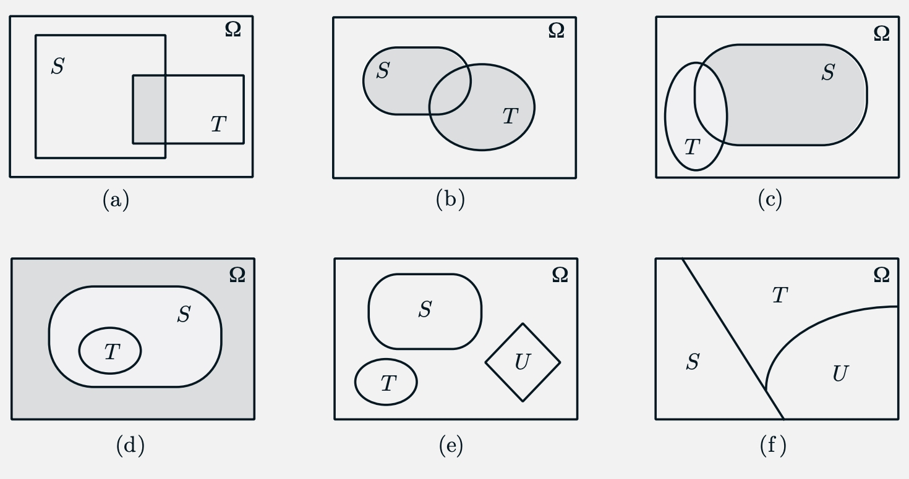
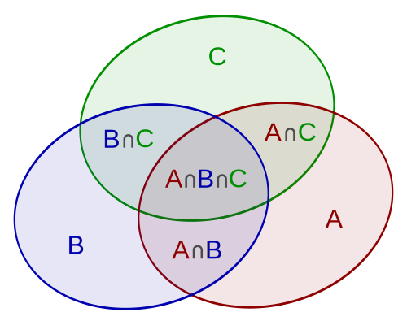
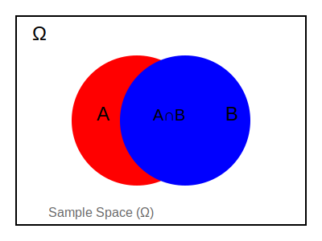
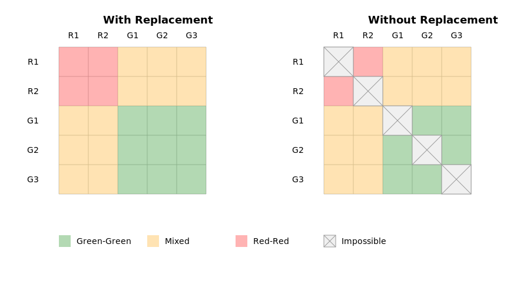

flowchart TD
Start[Problem: Count Possible Outcomes] --> Q1{"Are we counting outcomes\nthat happen in sequence?"}
Q1 -->|Yes| M1[Multiplication Rule:\nMultiply choices for each step]
Q1 -->|No| Q2{"Are we counting different\nways to achieve same result?"}
M1 --> ME1[Examples of Sequential Choices]
ME1 --> MC1["Password: letter then number\n26 letters × 10 numbers\n= 260 possibilities"]
MC1 --> MC2["Travel: bus then train\n3 bus routes × 2 train routes\n= 6 possible journeys"]
Q2 -->|Yes| Q3{"Do options overlap?"}
Q3 -->|No| A1[Simple Addition Rule:\nAdd all possibilities]
Q3 -->|Yes| A2["Extended Addition Rule:\nAdd - Overlap"]
A1 --> AE1[Examples of Non-Overlapping Options]
AE1 --> AC1["Coin toss: H or T\n1 + 1 = 2 outcomes"]
AC1 --> AC2["License type: Car or Motorcycle\n100 + 50 = 150 types"]
A2 --> AE2[Examples of Overlapping Options]
AE2 --> AC3["Students in Sports or Music:\n45 + 35 - 15 in both\n= 65 students"]
classDef start fill:#2d5a8c,stroke:#333,color:#fff,stroke-width:2px
classDef question fill:#d4426e,stroke:#333,color:#fff,stroke-width:2px
classDef rule fill:#156b45,stroke:#333,color:#fff,stroke-width:2px
classDef example fill:#4a4a4a,stroke:#333,color:#fff
class Start start
class Q1,Q2,Q3 question
class M1,A1,A2 rule
class ME1,AE1,AE2,MC1,MC2,AC1,AC2,AC3 example
17 Introduction to (Discrete) Probability
17.1 Probability: Preliminary Concepts
Imagine you’re trying to decide whether to bring an umbrella to class tomorrow. You check the weather forecast, which says there’s a 30% chance of rain. But what does this number really mean?
This is where probability comes in - it’s a mathematical way to measure how likely something is to happen.
A probability represents the likelihood or chance of an event occurring, expressed as a number between 0 and 1 (or as a percentage between 0% and 100%).
Before we dive into probability theory, let’s establish some foundational concepts that we’ll use throughout this course.
17.1.1 Basic Set Concepts
Before we can understand probability, we need to grasp some fundamental concepts from set theory. A set is simply a collection of distinct objects.
A set can be defined by:
- Listing all elements: A = \{1, 2, 3\}
- Describing a property: B = \{\text{x | x is a positive integer less than 4}\}
The empty set \emptyset contains no elements.
If A and B are sets:
- If A is a subset of B, we write A \subseteq B
- If x is an element of A, we write x \in A
For example, if B = \{1, 2, 3\}:
- \{1, 2\} is a subset of B (written \{1, 2\} \subseteq B)
- 1 is an element of B (written 1 \in B)
Note
The proper subset notation uses a strict subset symbol. If A is a proper subset of B, we write:
A \subset B
This means that A is a subset of B AND A \neq B (A is not equal to B).
In contrast, A \subseteq B allows for the possibility that A = B.
A set is a fundamental mathematical concept - it’s a collection of distinct objects where order doesn’t matter and duplicates are not allowed. In other words, each element either belongs to the set or it doesn’t, with no concept of “how many times” it belongs.
Formally, if x \in A (meaning x is an element of set A), then adding another copy of x has no effect on A. This gives us identities like:
\{1, 2, 2, 3\} = \{1, 2, 3\} = \{3, 1, 2\}
This distinguishes sets from other mathematical collections:
Lists/Sequences: Order matters and duplicates are allowed
- [1, 2, 2, 3] ≠ [1, 2, 3]
- [1, 2, 3] ≠ [3, 2, 1]
Multisets: Order doesn’t matter but duplicates are allowed
- {1, 2, 2, 3}ₘ ≠ {1, 2, 3}ₘ
- {1, 2, 2, 3}ₘ = {3, 2, 1, 2}ₘ
This unique property of sets - that membership is binary (an element either belongs or doesn’t) - makes them particularly useful in mathematics for describing collections where we only care about whether something is present, not how many times it appears or in what order.
17.1.2 Set Operations
Basic set (events) operations (given two sets A and B):
- Union (A \cup B): Elements in either A OR B (or both)
- Intersection (A \cap B): Elements in BOTH A AND B
- Complement (A^c or A^{'}): Elements NOT in A
- Difference (A \setminus B): Elements in A but NOT in B
These operations follow important laws like:
(A \cup B)^c = A^c \cap B^c (DeMorgan’s Law)
(A \cup (B \cap C) = (A \cup B) \cap (A \cup C) (Distributive Law)
Sets and the associated operations are easy to visualize in terms of Venn diagrams, as illustrated in the figure below:

Examples of Venn diagrams:
The shaded region is S \cap T.
The shaded region is S \cup T.
The shaded region is S \cap T^c.
Here, T \subset S. The shaded region is the complement of S.
The sets S, T, and U are disjoint.
The sets S, T, and U form a partition of the universal set \Omega.
The Universal Set (often denoted as \Omega, U, or S):
- In Set Theory:
- Set containing all elements in a given context
- All other sets are its subsets
- Complement of set A is A' = \Omega - A
- In Probability:
- Called the sample space S or \Omega
- Contains all possible outcomes
- Has probability P(\Omega) = 1
Key Properties:
- A \subseteq \Omega
- A \cup A' = \Omega
- A \cap A' = \emptyset
- \Omega' = \emptyset
- \emptyset' = \Omega
Examples:
- Die roll: \Omega = \{1,2,3,4,5,6\}
- Coin flip: \Omega = \{H,T\}
Set Theory as a Language for Probability
Set theory provides the mathematical framework for probability theory. Here are the key parallels:
| Set Theory | Probability Theory | Description |
|---|---|---|
| \Omega (Universal set) | Sample space (S) | All possible outcomes |
| x \in A (Element) | Outcome | Single result |
| A \subseteq \Omega (Subset) | Event | Collection of outcomes |
| \emptyset (Empty set) | Impossible event | Cannot occur (P(\emptyset) = 0) |
| \Omega (Universal set) | Certain event | Must occur (P(\Omega) = 1) |
| A \cup B (Union) | Either A OR B | P(A \cup B) = P(A) + P(B) - P(A \cap B) |
| A \cap B (Intersection) | Both A AND B | P(A \cap B) = P(A)P(B) (if independent) |
| A' (Complement) | Not A | P(A') = 1 - P(A) |
| A \cap B = \emptyset | Mutually exclusive | P(A \cap B) = 0 |
Cardinality of Sets
In set theory, we denote cardinality (the number of elements in a set) using vertical bars: |A|
Key points:
- |A| means “number of elements in set A”
- For a finite set like A = \{1, 2, 3\}, we have |A| = 3
- Empty set has cardinality zero: |\emptyset| = 0
- For two sets A and B:
- Union (no overlap): |A \cup B| = |A| + |B|
- Union (with overlap): |A \cup B| = |A| + |B| - |A \cap B|
- Cartesian product: |A \times B| = |A| \times |B|
Example:
If A = \{\spadesuit, \clubsuit, \heartsuit, \diamondsuit\} and B = \{K, Q, J\}, then:
- |A| = 4
- |B| = 3
- |A \times B| = 12 (all possible combinations)
The cardinality of a set is denoted by |A| or #A. Here are the calculations:
|\{apple, orange, watermelon\}| = 3 (Each element is distinct)
|\{1, 1, 1, 1, 1\}| = 1 (In a set, duplicates are counted only once)
|[0, 1]| = \aleph_1 (This is an uncountably infinite interval of real numbers)
|\{1, 2, 3, \cdots\}| = \aleph_0 (This is countably infinite)
|\{\emptyset, \{1\}, \{2\}, \{1, 2\}\}| = 4 (Each element is a distinct set)
|\{\emptyset, \{1\}, \{1, 1\}, \{1, 1, 1\}, \cdots\}| = 2 (After removing duplicates: \{\emptyset, \{1\}\} since \{1\} = \{1, 1\} = \{1, 1, 1\} = \cdots)
17.1.3 Understanding Set Relations: Elements vs Subsets (*)
The difference between an element belonging to a set and one set being a subset of another.
17.1.3.1 The “Belongs To” Relationship (\in)
When we say an element belongs to a set (written as x \in A), we’re describing membership of a single item in a collection. Think of a classroom: each individual student belongs to (is a member of) the class. They are elements of the set “class.”
Consider a deck of cards and let H be the set of all hearts:
H = \{2♥, 3♥, 4♥, 5♥, 6♥, 7♥, 8♥, 9♥, 10♥, J♥, Q♥, K♥, A♥\}
We can say:
- A♥ \in H (true, because the ace of hearts is one of the hearts)
- K♠ \notin H (false, because the king of spades is not a heart)
- \{A♥\} \notin H (false, this is a set containing the ace of hearts, not the card itself)
17.1.3.2 The “Is Contained In” Relationship (\subseteq)
A subset relationship (written as A \subseteq B) describes when one set is entirely contained within another set. Every element of the smaller set must appear in the larger set. This is different from set membership (\in), which describes when a single element belongs to a set.
To understand the distinction, let’s look at some examples:
Consider the following sets:
- A = \{1, 2\}
- B = \{1, 2, 3, 4\}
- C = \{1\}
For set membership (\in):
- 1 \in A (the number 1 is an element of set A)
- \{1\} \notin A (the set containing 1 is not an element of A)
- 2 \in B (the number 2 is an element of B)
For subset relationships (\subseteq):
- A \subseteq B (all elements of A are in B)
- C \subseteq A (all elements of C are in A)
- \{1\} \subseteq A (the set containing 1 is a subset of A)
A key insight is that while 1 \in A is true (1 is an element of A), \{1\} \in A is false (the set containing 1 is not an element of A). However, \{1\} \subseteq A is true (the set containing 1 is a subset of A).
Think of it this way: membership (\in) asks “Is this single thing in the set?” while subset (\subseteq) asks “Is every element of this smaller set found in the larger set?”
Another helpful example is with the empty set \emptyset:
- \emptyset \subseteq A for any set A (the empty set is a subset of every set)
- But \emptyset \notin A unless A specifically contains the empty set as an element
Exercise (https://www.alextsun.com/files/Prob_Stat_for_CS_Book.pdf). Using the given sets:
- A = \{1, 3\}
- B = \{3, 1\}
- C = \{1, 2\}
- D = \{\emptyset, \{1\}, \{2\}, \{1, 2\}, 1, 2\}
Determine whether the following are true or false:
- 1 \in A : TRUE (1 is an element of A)
- 1 \subseteq A : FALSE (1 is not a set, so subset relation doesn’t apply)
- \{1\} \subseteq A : TRUE (every element of the set {1} is an element of A)
- \{1\} \in A : FALSE (A doesn’t contain any sets as elements)
- 3 \notin C : TRUE (3 is not an element of C)
- A \in B : FALSE (B doesn’t contain any sets as elements)
- A \subseteq B : TRUE (A and B contain the same elements)
- C \in D : TRUE (the set {1,2} appears in D, but not the set C itself)
- C \subseteq D : TRUE (all elements of C (1 and 2) are also elements of D)
- \emptyset \in D : TRUE (empty set is listed as an element of D)
- \emptyset \subseteq D : TRUE (True, by definition, the empty set is a subset of any set. This is because if this were not the case, there would have to be an element of \emptyset which was not in D. But there are no elements in \emptyset, so the statement is true.)
- A = B : TRUE (they contain the same elements)
- \emptyset \subseteq \emptyset : TRUE (empty set is a subset of itself; the empty set is a subset of any set)
- \emptyset \in \emptyset : FALSE (empty set contains no elements)
17.2 Set Theory and Power Sets (Event Space)
The power set of a set, denoted as \mathcal{F}(S) or 2^{|S|}, is the set of all possible subsets of S, including the empty set and S itself.
This concept is crucial in probability theory because it helps us understand the relationship between the sample space S (all possible outcomes) and the event space (all possible events (i.e. all possible subsets of S) we might want to consider).
Let’s explore this with a simple example. Consider flipping a single coin where: S = \{H, T\} (our sample space)
The power set would be:
\mathcal{F}(S) = \{\emptyset, \{H\}, \{T\}, \{H,T\}\}
Each element in the power set represents a possible event. For instance:
- \emptyset: The impossible event (e.g., the coin landing neither heads nor tails)
- \{H\}: The event of getting heads
- \{T\}: The event of getting tails
- \{H,T\}: The certain event (the coin must land either heads or tails)
For a set with n elements, its power set will have 2^n elements. This is because for each element, we have two choices: include it or not include it in a subset.
17.3 Counting Rules in Probability: The Power of AND & OR
A fundamental challenge in probability is counting possible outcomes. Two key rules help us solve these problems:
17.3.1 The Multiplication Rule for Independent Events (“AND” Situations)
When we need a sequence of independent choices where we must make ALL choices, we multiply the number of possibilities for each choice. This principle applies when we need option A AND option B AND option C, etc.
For example, consider creating a password with exactly three characters in this order:
- First character must be a letter (26 choices)
- Second character must be a digit (10 choices)
- Third character must be a symbol (@, #, $, or % - so 4 choices)
Total possible passwords = 26 × 10 × 4 = 1,040
This is like filling three slots where each slot has its own set of valid options. Each new requirement multiplies our total possibilities.
17.3.2 The Addition Rule for Mutually Exclusive Events (“OR” Situations)
When there are multiple valid ways to achieve a goal, and we can use ANY ONE of these ways, we add the number of possibilities. This applies when we accept option A OR option B OR option C, etc.
For example, if a password must be EITHER:
- A 3-letter word (26³ possibilities) OR
- A 4-digit number (10⁴ possibilities)
Total possibilities = 26³ + 10⁴ = 17,576 + 10,000 = 27,576
Think of this as having separate paths to success - we count how many ways each path offers and sum them up.
17.3.3 Combining the Rules
Many real problems require both multiplication and addition.
Example 1. For instance, if a password must be EITHER:
- A letter followed by two digits (26 × 10 × 10 possibilities) OR
- Three symbols (4 × 4 × 4 possibilities)
Total = (26 × 10 × 10) + (4 × 4 × 4) = 2,600 + 64 = 2,664
Understanding when to multiply (AND situations) versus when to add (OR situations) is key to solving counting problems correctly.
Example 2. Calvin wants to reach Milwaukee and has these options:
- First leg (home → Chicago): 3 bus services OR 2 train services
- Second leg (Chicago → Milwaukee): 2 bus services OR 3 train services
To solve this:
- First leg options = 3 + 2 = 5 ways
- Second leg options = 2 + 3 = 5 ways
- Total routes = 5 × 5 = 25 possibilities
Why multiply at the end? Because for EACH way of reaching Chicago, Calvin can use ANY of the ways to reach Milwaukee. This creates 25 unique combinations like:
- Bus 1 → Bus 1
- Bus 1 → Train 1
- Bus 2 → Bus 2 …and so on.
The key is recognizing whether you’re dealing with sequential choices (multiply) or alternative options (add) at each step. Master this distinction, and you’ll solve complex counting problems with ease.
flowchart TD
subgraph Multiplication_Rule[Multiplication Rule Examples]
direction TB
M1["Choose Breakfast"] --> MA["Drink\n(3 options)"] & MB["Food\n(2 options)"]
MA --> MA1((Coffee)) & MA2((Tea)) & MA3((Juice))
MB --> MB1((Toast)) & MB2((Cereal))
MR["Total Combinations:\n3 drinks × 2 foods\n= 6 possible breakfasts"]
subgraph Tree_Example[Tree Diagram]
direction LR
T1["PIN First Digit\n(0-9)"] --> T2["Second Digit\n(0-9)"]
T2 --> T3["10 × 10 = 100\ntotal combinations"]
end
end
subgraph Addition_Rules[Addition Rule Examples]
direction TB
subgraph Exclusive[Mutually Exclusive Example]
direction LR
A1["Coin Flip"] --> AH((Heads))
A1 --> AT((Tails))
AR["Total = 1 + 1 = 2\nNo overlap possible"]
end
subgraph Overlapping[Overlapping Sets Example]
direction TB
O1["Students in\nClubs"] --> OS["Science Club\n25 students"] & OA["Art Club\n20 students"]
OI["Both Clubs\n8 students"]
OT["Total = 25 + 20 - 8\n= 37 students"]
end
end
classDef default fill:#f9f9f9,stroke:#333,color:#000
classDef set fill:#2d5a8c,stroke:#333,color:#fff
classDef result fill:#156b45,stroke:#333,color:#fff
classDef option fill:#f5f5f5,stroke:#333,color:#333
classDef example fill:#4a4a4a,stroke:#333,color:#fff
class MA,MB,A1,O1 set
class MR,AR,OT result
class MA1,MA2,MA3,MB1,MB2,AH,AT option
class Tree_Example,Exclusive,Overlapping example
The Inclusion-Exclusion Principle (*)
The Inclusion-Exclusion Principle states that for two sets A and B:
|A \cup B| = |A| + |B| - |A \cap B|
This means: The size of their union equals the sum of their individual sizes, minus their intersection (to avoid double counting shared elements).
For three sets A, B, and C, the principle extends to:
|A \cup B \cup C| = |A| + |B| + |C| - |A \cap B| - |B \cap C| - |A \cap C| + |A \cap B \cap C|
This pattern continues for more sets, alternating between adding and subtracting intersections of increasing size.
A simple example:
- Set A: Students who play soccer (20 students)
- Set B: Students who play basketball (15 students)
- 8 students play both sports
- Total students in either sport = 20 + 15 - 8 = 27 students
The principle is essential in probability theory, combinatorics, and set theory. It helps us correctly count elements when sets overlap, avoiding the common error of double-counting shared elements.

17.4 (Discrete) Probability Theory: Basic Concepts and Rules
Core Concepts
Probability theory provides a rigorous foundation for quantifying uncertainty and analyzing random phenomena.
17.4.1 Random Experiments
A random experiment is any procedure that has a well-defined set of possible outcomes but whose specific result cannot be predicted with certainty.
Properties:
- Repeatable under identical conditions
- Known possible outcomes
- Unpredictable specific results
17.4.2 Sample Space (S)
- Complete set of all possible outcomes of a random experiment
- Denoted by S (or \Omega)
- Properties:
- Mutually exclusive outcomes
- Collectively exhaustive
Examples:
- Coin flip: S = \{H, T\}
- Die roll: S = \{1, 2, 3, 4, 5, 6\}
17.4.3 The Event Space: What Can Happen in an Experiment
Events are subsets of the sample space S. This means we can use standard set operations to work with them in a precise, mathematical way.
The event space \mathcal{F} is a collection of all events (outcomes or sets of outcomes) that we can assign probabilities to in an experiment. It must follow three fundamental rules:
- Complete Space Rule
- The entire sample space S must be in \mathcal{F}
- This means all possible outcomes together form a valid event
- Complement Rule
- If event A is in \mathcal{F}, then “not A” (written as A^c) must also be in \mathcal{F}
- Example: If “getting heads” is an event, “not getting heads” must also be an event
- Union Rule
- If we have any sequence of events A_1, A_2, ... in \mathcal{F}, their union must also be in \mathcal{F}
- This means we can combine valid events to form new valid events
Let’s examine a simple coin flip:
- Sample space: S = \{H, T\} (Heads or Tails)
- The complete event space: \mathcal{F} = \{\emptyset, \{H\}, \{T\}, \{H,T\}\}
- \emptyset : impossible event (no outcomes)
- \{H\} : getting Heads
- \{T\} : getting Tails
- \{H,T\} : getting either Heads or Tails
Verifying the rules:
- Rule 1: \{H,T\} (the sample space) is included
- Rule 2: For event \{H\}, its complement \{T\} is included
- Rule 3: The union of any events (like \{H\} \cup \{T\} = \{H,T\}) is included
This mathematical structure ensures we can properly define and work with probabilities for all meaningful events in our experiment.
Event Types
- Simple Events: Single outcomes
- Compound Events: Multiple outcomes
- Sure (or Certain) Event: Sample space S
- Impossible Event: Empty set \emptyset
17.4.4 Probability Measure: Assigning Numbers to Events
A probability measure P is a way to quantify how likely events are to occur. It takes any event from our event space \mathcal{F} and assigns it a number between 0 and 1. This assignment follows three essential rules/axioms.
These axioms, introduced by Kolmogorov in 1933, serve as the foundation for all probability calculations:
- Non-Negativity Rule
- For any event A, its probability must be at least 0: P(A) \geq 0
- We can never have a negative probability
- Example: If we roll a die, the probability of getting a 6 is \frac{1}{6} (it cannot be negative)
- Total Probability Rule
- The probability of all possible outcomes must equal 1: P(S) = 1
- Something must happen - the probabilities of all possibilities add up to 100%
- Example: For a fair coin, P(\text{heads}) + P(\text{tails}) = 0.5 + 0.5 = 1
- Addition Rule for Non-Overlapping Events
- If events cannot happen together (they’re “disjoint”), the probability of their union equals the sum of their individual probabilities
- Written formally: P(A_1 \cup A_2 \cup ...) = P(A_1) + P(A_2) + ...
- Example: In drawing a card, P(\text{getting ace}) = P(\text{ace of hearts}) + P(\text{ace of diamonds}) + P(\text{ace of clubs}) + P(\text{ace of spades})
These rules/axioms ensure that our probability assignments make logical sense and match our intuitive understanding of chance and likelihood.
Example: Die Roll
- Sample Space: S = \{1,2,3,4,5,6\}
- Event “Even”: A = \{2,4,6\}
- Probability: P(A) = \frac{3}{6} = \frac{1}{2}
Understanding Outcomes vs Events
There’s an important distinction between outcomes (also called simple events) and events:
An outcome or simple event is a single, indivisible result of an experiment. For example, getting heads on a single coin flip is an outcome.
An event is a set of outcomes - it can contain one outcome, multiple outcomes, or even no outcomes (the empty set). For example, “getting at least one head when flipping two coins” is an event containing multiple outcomes.
Let’s illustrate this with two coin flips where:
S = \{HH, HT, TH, TT\} (our sample space)
The power set (all possible events) would contain 2^4 = 16 events:
- \emptyset (impossible event)
- Single outcomes: \{HH\}, \{HT\}, \{TH\}, \{TT\}
- Pairs of outcomes: \{HH,HT\}, \{HH,TH\}, \{HH,TT\}, \{HT,TH\}, \{HT,TT\}, \{TH,TT\}
- Triples: \{HH,HT,TH\}, \{HH,HT,TT\}, \{HH,TH,TT\}, \{HT,TH,TT\}
- Complete sample space: \{HH,HT,TH,TT\}
In probability theory, a tree diagram may be used to represent a sample space and help calculate probabilities. A tree diagram may represent a series of independent events (such as a set of coin flips) or conditional probabilities (such as drawing cards from a deck, without replacing the cards).
Visualizing Sample Spaces
In probability theory and statistics, being able to visualize sample spaces is crucial for understanding possible outcomes and their relationships. We’ll explore three main approaches to visualizing sample spaces:
- Venn Diagrams
- Tree Diagrams
- Grid/Matrix Diagrams
17.4.4.1 Venn Diagrams
Venn diagrams provide a powerful visual tool for understanding sample spaces.
- A Venn diagram is a graphical representation of sets and their relationships using (overlapping or disjoint) circles or other shapes.
- Think of each shape in a Venn diagram as a container that holds items with specific characteristics. Where these shapes overlap, we find items that share characteristics of multiple groups.
In probability theory, our sample space (usually denoted by Ω or S) represents all possible outcomes of an experiment. When we draw a Venn diagram, the rectangular frame represents this entire sample space (a universal set), with a probability of 1. Any event is then a subset of this space.

17.4.4.2 Tree Diagrams
Tree diagrams are particularly useful for visualizing sequential events and their outcomes. Here’s a tree diagram showing a simple probability experiment: We toss a fair coin twice.
graph LR
Start[Start] --> H1[H]
Start --> T1[T]
H1 --> H2[H]
H1 --> T2[T]
T1 --> H3[H]
T1 --> T3[T]
H2 --> HH([HH: 1/4])
T2 --> HT([HT: 1/4])
H3 --> TH([TH: 1/4])
T3 --> TT([TT: 1/4])
linkStyle 0,2,3 stroke:#1e88e5,stroke-width:2px
linkStyle 4,5 stroke:#ff5252,stroke-width:2px
linkStyle 1 stroke:#ff5252,stroke-width:2px
style Start fill:#f5f5f5,stroke:#333,stroke-width:2px
style H1 fill:#bbdefb,stroke:#1e88e5,stroke-width:2px
style T1 fill:#ffcdd2,stroke:#ff5252,stroke-width:2px
style H2 fill:#bbdefb,stroke:#1e88e5,stroke-width:2px
style T2 fill:#ffcdd2,stroke:#ff5252,stroke-width:2px
style H3 fill:#bbdefb,stroke:#1e88e5,stroke-width:2px
style T3 fill:#ffcdd2,stroke:#ff5252,stroke-width:2px
style HH fill:#f5f5f5,stroke:#333,stroke-width:2px
style HT fill:#f5f5f5,stroke:#333,stroke-width:2px
style TH fill:#f5f5f5,stroke:#333,stroke-width:2px
style TT fill:#f5f5f5,stroke:#333,stroke-width:2px
17.4.4.3 Grid/Matrix Diagrams
Grid diagrams are excellent for showing combinations of events.
Scenario: We have 7 balls in the bag:
- 4 red balls (R₁, R₂, R₃, R₄)
- 3 black balls (B₁, B₂, B₃)
- We’ll draw 2 balls without replacement
Let’s visualize the entire sample space using a grid where each cell represents selecting two balls in order (first draw → columns, second draw ↓ rows):
| First Draw → | R₁ | R₂ | R₃ | R₄ | B₁ | B₂ | B₃ |
|---|---|---|---|---|---|---|---|
| Second Draw ↓ | |||||||
| R₁ | X | ⚫ | ⚫ | ⚫ | ⚪ | ⚪ | ⚪ |
| R₂ | ⚫ | X | ⚫ | ⚫ | ⚪ | ⚪ | ⚪ |
| R₃ | ⚫ | ⚫ | X | ⚫ | ⚪ | ⚪ | ⚪ |
| R₄ | ⚫ | ⚫ | ⚫ | X | ⚪ | ⚪ | ⚪ |
| B₁ | ⚪ | ⚪ | ⚪ | ⚪ | X | ⚫ | ⚫ |
| B₂ | ⚪ | ⚪ | ⚪ | ⚪ | ⚫ | X | ⚫ |
| B₃ | ⚪ | ⚪ | ⚪ | ⚪ | ⚫ | ⚫ | X |
Where:
- X: Impossible (same ball twice)
- ⚫: Both same color (both red in upper-left, both black in lower-right)
- ⚪: Different colors (red-black or black-red)
From this grid:
- Both red = 12 outcomes (⚫ in upper-left quadrant)
- Both black = 6 outcomes (⚫ in lower-right quadrant)
- Red then black = 12 outcomes (⚪ in lower-left quadrant)
- Black then red = 12 outcomes (⚪ in upper-right quadrant)
- Total possible outcomes = 42 (remove seven diagonal X’s from 7 × 7 grid)
Total count verification: 12 + 6 + 12 + 12 = 42 outcomes
Note: Each outcome is determined by reading first draw (column) then second draw (row).
17.4.4.3.1 Grid/Matrix Diagrams with Unordered Pairs
For this modified scenario where order doesn’t matter, we need to adjust our counting since (R₁,B₁) and (B₁,R₁) would be considered the same outcome.
Scenario: We have 7 balls in the bag:
- 4 red balls (R₁, R₂, R₃, R₄)
- 3 black balls (B₁, B₂, B₃)
- We’ll draw 2 balls without replacement
- Order does NOT matter
Because order doesn’t matter, we only need to look at half of the grid, excluding the diagonal.
| First Draw → | R₁ | R₂ | R₃ | R₄ | B₁ | B₂ | B₃ |
|---|---|---|---|---|---|---|---|
| Second Draw ↓ | |||||||
| R₁ | X | ⚫ | ⚫ | ⚫ | ⚪ | ⚪ | ⚪ |
| R₂ | – | X | ⚫ | ⚫ | ⚪ | ⚪ | ⚪ |
| R₃ | – | – | X | ⚫ | ⚪ | ⚪ | ⚪ |
| R₄ | – | – | – | X | ⚪ | ⚪ | ⚪ |
| B₁ | – | – | – | – | X | ⚫ | ⚫ |
| B₂ | – | – | – | – | – | X | ⚫ |
| B₃ | – | – | – | – | – | – | X |
Where:
- X: Impossible (same ball twice)
- ⚫: Both same color
- ⚪: Different colors
- –: Redundant (already counted in upper half)
From this grid:
- Both red = 6 outcomes (⚫ in upper-left quadrant)
- Both black = 3 outcomes (⚫ in lower-right quadrant)
- One red and one black = 12 outcomes (⚪ only counted once)
- Total possible outcomes = 21 (half of the ordered outcomes: 42 ÷ 2)
Total count verification: 6 + 3 + 12 = 21 unordered outcomes
Note: Each unordered pair {R₁,B₁} is counted only once, whereas in the ordered scenario we counted both (R₁,B₁) and (B₁,R₁).
17.4.5 Discrete Probability Spaces
A discrete probability space describes situations where outcomes are individually countable and distinct. It consists of:
Sample Space (S)
- A set of all possible outcomes
- Must be countable (finite or infinite)
- Each outcome must be distinct and well-defined
Simple Examples
- Single coin flip: S = \{\text{Heads}, \text{Tails}\}
- Die roll: S = \{1, 2, 3, 4, 5, 6\}
- Drawing one card: S = \{\text{52 different cards}\}
For equally likely outcomes, the probability of any single outcome is:
P(\text{outcome}) = \frac{1}{\text{number of possible outcomes}}
Example: For a fair die, P(\text{rolling a 3}) = \frac{1}{6}
Warning
There is no single, universal formula for calculating probabilities across all probability spaces and situations.
17.4.6 Different Types of Probability Spaces
- Classical (Finite, Equally Likely)
- Only here we can use: P(A) = \frac{\text{favorable outcomes}}{\text{total outcomes}}
- Limited to finite, equally likely cases
- General Discrete
- Must specify individual probabilities
- Example: Loaded die needs experimental/empirical determination
- Sum of probabilities must equal 1
- Continuous
- Uses calculus and density functions
- Probabilities found by integration
- Example: P(a \leq X \leq b) = \int_a^b f(x)dx
- No universal formula for density function
- Mixed/Hybrid
- Combines discrete and continuous elements
- Different methods needed for different parts
17.4.7 Why No Universal Formula?
- Different types of randomness need different mathematical tools
- Nature of outcomes (discrete/continuous) affects calculation method
- Prior knowledge or assumptions shape probability calculation
- Some probabilities must be found empirically (frequentist/statistical probability) rather than calculated
Frequentist/Statistical/Empirical Probability & the Law of Large Numbers
Frequentist probability defines probability as the long-term relative frequency of an event’s occurrence in repeated trials under identical conditions:
P(A) = \lim_{n \to \infty} \frac{\text{number of times A occurs}}{n}
The Law of Large Numbers states that as we increase the number of trials, the observed frequency converges to the true probability:
- If true probability of heads is 0.5
- In 10 flips: might get 7 heads (frequency = 0.7)
- In 1000 flips: might get 495 heads (frequency ≈ 0.495)
- As trials → ∞, frequency → 0.5
Key Characteristics:
- Requires repeatable experiments under identical conditions
- Objective approach - probability viewed as physical property
- Cannot handle one-time events
- Foundation for classical statistical inference
Limitation: We can never perform infinite trials, so we estimate probabilities from large but finite samples.
Important Terms in Probability Theory
Let’s clarify some closely related but distinct concepts:
Probabilistic Model consists of two fundamental elements:
- A sample space \Omega (or S): the set of all possible outcomes
- A probability law that assigns probabilities to events (subsets of \Omega)
Probability Measure (P):
- The formal mathematical function that maps events to numbers in [0,1]
- Must satisfy the three axioms (non-negativity, normalization, additivity)
- Example: P(A) gives the probability of event A occurring
Probability Distribution:
- The specific assignment of probabilities to all possible outcomes
- Describes how probability is distributed across the sample space
- Example: For a fair die, {1: 1/6, 2: 1/6, 3: 1/6, 4: 1/6, 5: 1/6, 6: 1/6}
Probability Law:
- Often used as a synonym for probability distribution
- Can also refer to the underlying rule generating the probabilities
- Example: “Each face of a fair die has equal probability”
In practice, these terms are interrelated: The probability measure implements the probability law, which determines the probability distribution, all within the context of a probabilistic model.
Common Types of (Discrete) Distributions (*)
Uniform Distribution
The uniform distribution is the simplest distribution where all outcomes have equal probability. Rolling a fair die or flipping a fair coin follows a uniform distribution. For a die, each number has probability \frac{1}{6}.
Binomial Distribution
The binomial distribution describes the number of successes in a fixed number of independent yes/no experiments. For example, if we flip a coin 10 times, the number of heads follows a binomial distribution. The probability of getting exactly k heads in n flips is:
P(X = k) = \binom{n}{k} p^k (1-p)^{n-k}
where p is the probability of success on each try.
Geometric Distribution
The geometric distribution describes the number of tries needed until the first success occurs. For example, the number of coin flips needed until we get our first heads. The probability of success on the kth try is:
P(X = k) = (1-p)^{k-1}p
where p is the probability of success on each try.
17.4.7.1 Simple Example
Let’s consider flipping a fair coin:
The sample space \Omega contains all possible outcomes: {Heads, Tails}
The probability measure assigns: P(\text{Heads}) = \frac{1}{2} and P(\text{Tails}) = \frac{1}{2}
This forms a uniform distribution since both outcomes are equally likely
We can verify the axioms:
- Non-negativity: Both \frac{1}{2} \geq 0
- Normalization: \frac{1}{2} + \frac{1}{2} = 1
- Additivity: If we consider Heads and Tails as disjoint events, their probabilities add up correctly
Discrete vs. Continuous Probability: Understanding the Two Types of Random Events
In probability, we encounter two fundamentally different types of random events: those we can count (discrete) and those we can measure (continuous). This distinction shapes how we calculate and interpret probabilities.
17.4.7.2 Discrete Probability
What: Events that can be counted with whole numbers - Like counting marbles, rolling dice, or flipping coins - Has “gaps” between possible values
Key Examples: 1. Rolling a die - Possible outcomes: 1, 2, 3, 4, 5, or 6 - Nothing in between (can’t roll a 2.5) - Can say: P(\text{rolling a 6}) = \frac{1}{6}
- Number of customers per hour
- Could be 0, 1, 2, 3, …
- Can’t have 2.7 customers
- Can say: P(\text{exactly 5 customers}) = 0.1
17.4.7.3 Continuous Probability
What: Events measured on a continuous scale - Like measuring height, time, or temperature - Values flow smoothly with no gaps
Key Examples: 1. Person’s height - Could be 170cm, 170.1cm, 170.11cm, … - Can measure with increasing precision - Must use ranges: P(170 \leq \text{height} \leq 171)
- Time until next bus arrives
- Could be 5 mins, 5.1 mins, 5.01 mins, …
- Infinitely divisible
- Must use ranges: P(\text{waiting time} \leq 10 \text{ mins})
17.4.7.4 Critical Differences
- Individual Values
- Discrete: Can have positive probability
- P(\text{rolling a 6}) = \frac{1}{6} > 0
- Continuous: Always have zero probability
- P(\text{height} = 170.000...) = 0
- Discrete: Can have positive probability
- How We Calculate
- Discrete: Can sum individual probabilities
- Continuous: Must use ranges and integrals
17.4.7.5 Real-World Application
Think about a pizza delivery: - Discrete: Number of toppings (1, 2, 3, …) - Continuous: Delivery time (15.7 minutes, 15.73 minutes, …)
17.4.7.6 Why Understanding This Matters
- Helps choose appropriate probability tools
- Guides how we collect and analyze data
- Determines how we express uncertainty
- Shapes how we make predictions
This foundation helps us tackle real-world probability problems with the right approach!
17.4.8 Classical (or ‘Naive’) Probability: The Equal-Likelihood Special Case in Discrete Sample Spaces
Classical probability applies to finite sample spaces where all outcomes are equally likely to occur. The probability formula is:
P(\text{event}) = \frac{\text{number of favorable outcomes}}{\text{total number of possible outcomes}}
Requirements:
- Finite sample space (finite number of outcomes)
- All outcomes equally likely
- Total probability sums to 1
Examples:
- Fair die roll:
- P(\text{rolling a 3}) = \frac{1}{6}
- P(\text{rolling an even number}) = \frac{3}{6} = \frac{1}{2}
- Drawing from a standard deck:
- P(\text{drawing an ace}) = \frac{4}{52} = \frac{1}{13}
- P(\text{drawing a heart}) = \frac{13}{52} = \frac{1}{4}
Key Limitation:
Classical probability fails when outcomes are not equally likely (e.g., loaded die) or when the sample space is infinite.
This is why it’s called “naive” probability - it assumes a simple, idealized situation where simple counting is sufficient.
17.4.8.1 Starting Assumptions
When developing classical probability theory, we begin with a probability experiment that has two key properties:
- The sample space S is finite, with cardinality |S| = n
- All elementary outcomes are equally likely
We can write our sample space explicitly as: S = \{s_1, s_2, ..., s_n\}
This leads us to classical (or Laplace) probability, which we’ll derive rigorously in the following section. This special case provides a foundation for understanding more complex probability scenarios and helps build crucial probabilistic intuition.
17.4.8.2 Core Axioms of Probability Theory
To derive classical probability, we start with the aforementioned key probability axioms. These form the mathematical foundation for all probability theory, including the classical or ‘naive’ probability:
- For any event A, P(A) \geq 0 (Non-negativity)
- P(S) = 1 (Total probability)
- For disjoint events A and B, P(A \cup B) = P(A) + P(B) (Additivity)
17.4.8.3 Deriving the Classical (‘Naive’) Probability Formula (Equal-Likelihood Case)
17.4.8.3.1 Starting Point
In a fair game or unbiased experiment where all outcomes are equally likely, we can derive the famous “number of favorable outcomes divided by total outcomes” formula.
17.4.8.3.2 The Setup
Consider a finite sample space S with n outcomes: \{s_1, s_2, ..., s_n\}
Equal-Likelihood Assumption:
- Each outcome has the same probability p
- Mathematically: P(\{s_1\}) = P(\{s_2\}) = ... = P(\{s_n\}) = p
17.4.8.3.3 Step-by-Step Derivation
Use Total Probability Axiom
- All probabilities must sum to 1
- For our n equally likely outcomes:
P(S) = P(\{s_1\}) + P(\{s_2\}) + ... + P(\{s_n\}) = 1 \underbrace{p + p + ... + p}_{n \text{ terms}} = 1 np = 1 p = \frac{1}{n} = \frac{1}{|S|}
Calculate Probability of Any Event A
- Let event A contain k outcomes
- By the addition rule for disjoint events: P(A) = \underbrace{p + p + ... + p}_{k \text{ terms}} P(A) = k \cdot \frac{1}{|S|} = \frac{k}{|S|} = \frac{|A|}{|S|}
The Classical Probability Formula P(A) = \frac{|A|}{|S|} = \frac{\text{number of favorable outcomes}}{\text{total number of possible outcomes}}
17.4.8.4 Examples to Illustrate
- Fair Die Roll
- S = \{1,2,3,4,5,6\}, so |S| = 6
- For getting an even number, A = \{2,4,6\}, so |A| = 3
- P(A) = \frac{3}{6} = \frac{1}{2}
- Drawing a Card
- |S| = 52 (total cards)
- For drawing a king, |A| = 4
- P(\text{king}) = \frac{4}{52} = \frac{1}{13}
17.4.8.5 Important Limitations
This formula only works when:
- Sample space is finite (we can count outcomes)
- All outcomes are equally likely
- Each outcome is distinct and well-defined
If any of these conditions fail (like with a loaded die), we need different methods to calculate probabilities.
17.4.8.6 Understanding the Result
This derivation reveals several profound insights about classical probability:
The familiar “counting formula” (‘Naive’ probability) isn’t just an intuitive rule - it follows necessarily from our axioms combined with the equal-likelihood assumption. When we say outcomes are equally likely, we’re forced mathematically to assign each elementary outcome a probability of \frac{1}{|S|}. This isn’t a choice but a requirement of the axioms.
For any event A, its probability is determined entirely by comparing two cardinalities: the size of the event (|A|) relative to the size of the sample space (|S|).
Fair Coin Toss Probability Space
A fair coin toss experiment is defined by:
Sample Space:
\Omega = \{H, T\}
Event Space (collection of all possible events):
\mathcal{F} = \{\{H\}, \{T\}, \{H, T\}, \emptyset\}
Probability Measure:
- P(\{H\}) = P(\{T\}) = \frac{1}{2} (probability of heads or tails)
- P(\Omega) = P(\{H, T\}) = 1 (certainty)
- P(\emptyset) = 0 (impossible event)
Key Points:
- This is a simple probability space that satisfies the axioms:
- P(A) \geq 0 for all events A
- P(\Omega) = 1
- P(A \cup B) = P(A) + P(B) for disjoint events
- The event space \mathcal{F} includes:
- Individual outcomes: \{H\} and \{T\}
- The entire sample space: \{H, T\}
- The empty set: \emptyset
- The probabilities are equal (\frac{1}{2}) because it’s a fair coin
This example illustrates a complete probability space with its three components: sample space (\Omega), event space (\mathcal{F}), and probability measure (P).
17.4.8.7 Example Application
Let’s solidify this understanding by working through a concrete example. Consider rolling a fair six-sided die and finding P(\text{even number}):
- First, identify the sample space: S = \{1, 2, 3, 4, 5, 6\}, giving us |S| = 6
- Then, identify the event: A = \{2, 4, 6\}, giving us |A| = 3
- Apply the formula: P(\text{even number}) = \frac{|A|}{|S|} = \frac{3}{6} = \frac{1}{2}
Key Questions Before Calculating Probabilities
Before we can correctly calculate probabilities in any discrete scenario, we must answer two fundamental questions:
- Does Order Matter?
The importance of order fundamentally changes how we count outcomes. Consider selecting two cards from a deck:
- If we’re playing poker, order doesn’t matter - getting an ace and then a king is the same hand as getting a king and then an ace.
- If we’re performing a magic trick where we need specific cards in sequence, order matters - getting an ace then a king is different from getting a king then an ace.
When order matters, we’re dealing with permutations. When order doesn’t matter, we’re dealing with combinations. This distinction dramatically affects the number of possible outcomes and, consequently, our probability calculations.
- Is Sampling With or Without Replacement?
After selecting an item, do we put it back before the next selection? This question fundamentally changes the probability structure:
- With replacement: Each selection has the same probability distribution as the first selection. Drawing a red ball and replacing it means the probability of drawing red on the next try remains unchanged.
- Without replacement: Each selection changes the probability distribution for subsequent selections. Drawing a red ball and not replacing it means there are fewer red balls available for the next draw.
These sampling schemes lead to different probability models:
- With replacement leads to independent events and often simpler calculations
- Without replacement leads to dependent events and requires conditional probability
Understanding When to ADD vs MULTIPLY Probabilities
17.4.9 The Key Principle
- ADD when events represent different ways (paths) to achieve the same outcome
- MULTIPLY when events must occur in sequence (one after another)
17.4.10 Example 1: Single Die Roll
Consider events:
- A: “rolling an even number” = {2, 4, 6}
- B: “rolling a number > 4” = {5, 6}
P(A or B) requires ADDITION because we want any outcome satisfying either condition:
- P(A or B) = P(A) + P(B) - P(A and B)
- = 3/6 + 2/6 - 1/6 = 4/6
17.4.11 Example 2: Two Coin Flips
For P(at least one heads):
- ADD different successful paths: P(HT or TH or HH)
- = 1/4 + 1/4 + 1/4 = 3/4
For P(two heads):
- MULTIPLY along path: P(H) × P(H)
- = 1/2 × 1/2 = 1/4
17.4.12 Why This Works
- Addition combines different ways to succeed
- Multiplication reflects narrowing down possibilities with each sequential requirement
graph LR
Start[Start] --> H1[H]
Start --> T1[T]
H1 --> H2[H]
H1 --> T2[T]
T1 --> H3[H]
T1 --> T3[T]
17.4.13 Understanding Classical Probability Through the Urn Example
In our urn with 3 green and 2 red balls:
- P(\text{green}) = \frac{3}{5}
- P(\text{red}) = \frac{2}{5}
- P(\text{green}) + P(\text{red}) = 1
The classical definition of probability assumes:
- A finite sample space \Omega with equally likely outcomes (‘fair’ experiment)
- For an event A, probability is defined as: P(A) = \frac{\text{favorable outcomes}}{\text{total outcomes}}
In our urn with 3 green and 2 red balls, these assumptions manifest as:
- Sample space \Omega = \{b_1, b_2, b_3, b_4, b_5\} where each ball is equally likely
- For green: P(\text{green}) = \frac{|\text{green balls}|}{|\Omega|} = \frac{3}{5}
- For red: P(\text{red}) = \frac{|\text{red balls}|}{|\Omega|} = \frac{2}{5}
Key probability axioms are demonstrated:
- Non-negativity: P(\text{green}), P(\text{red}) \geq 0
- Normalization: P(\Omega) = P(\text{green}) + P(\text{red}) = 1
- Additivity: Since green and red are disjoint events, P(\text{green or red}) = P(\text{green}) + P(\text{red})
REMARK: Many probabilistic situations have the property that they involve a number of different possible outcomes, all of which are equally likely. For example, Heads and Tails on a coin are equally likely to be tossed, the numbers 1 through 6 on a die are equally likely to be rolled, and the ten balls in the above box are all equally likely to be picked.
‘Naive’ (classical) probability definition assumes uniform probability measure (all outcomes equally likely), and finite uniform sample space.
When considering shapes or elements of the same color in an urn or box, treating them as distinguishable allows you to assume a uniform sample space — equally likely outcomes.
17.5 How to Calculate Basic Probabilities
Let’s explore some fundamental probability concepts using a simple example with colored balls in an urn/bag. This example will help us understand:
- How to calculate basic probabilities using the tree diagrams
- How replacement affects probability
- How the importance of order affects our calculations
- How to break down probability problems into steps
Tree diagrams are powerful tools for visualizing sequential events. Each branch represents a possible outcome, and probabilities multiply along paths.
Sampling Methods Overview
| Sampling Method | With Replacement | Without Replacement |
|---|---|---|
| Order Matters | Each selection sequence is counted separately | Each sequence is unique, items not replaced |
| Order Does Not Matter | Items can be repeated, sequence ignored | Each group is unique, no repeats allowed |
17.5.1 Example 1: Drawing Two Balls from an Urn or a Bag
Consider drawing two balls from an urn containing 3 green and 2 red balls.
Find the probabilities of the following random events:
The first ball is red and the second one is green (order matters, drawing without replacement)
The first ball is red and the second one is green (order matters, drawing with replacement)
The balls are of different colors (order doesn’t matter, drawing without replacement)
The balls are of different colors (order doesn’t matter, drawing with replacement)
Understanding Event Types in Probability:
- Simple events represent a single outcome from a single random action, such as drawing one ball from an urn. The probability of a simple event is calculated directly from the number of favorable outcomes divided by the total possible outcomes.
- Compound events involve multiple outcomes or conditions that must occur together. These can occur simultaneously (like rolling two dice at once) or sequentially (like drawing two balls one after another). The key difference lies in whether the events happen at the same time or in sequence.
- Sequential events are a specific type of compound events where outcomes occur in a particular order over time. Our urn example is particularly instructive here because it demonstrates sequential events through the process of drawing balls one after another. This allows us to explore how the probability of the second draw depends on what happened in the first draw (when sampling without replacement).

To better understand how the sample space changes based on our sampling method, let’s examine two scenarios:
- With Replacement
When we sample with replacement, we return the ball to the urn after the first draw. This means:
- The probability remains constant for each draw
- Total possible outcomes: 25 (5×5 grid)
- Each outcome has equal probability
- P(\text{both green}) = \frac{3}{5} \times \frac{3}{5} = \frac{9}{25}
- P(\text{both red}) = \frac{2}{5} \times \frac{2}{5} = \frac{4}{25}
- P(\text{mixed}) = \frac{12}{25}
- Without Replacement
When we sample without replacement, the first draw affects the probability of the second draw:
- Total possible outcomes: 20 (removing diagonal cells where same ball is drawn twice)
- Second draw probabilities change based on first draw
- P(\text{both green}) = \frac{3}{5} \times \frac{2}{4} = \frac{6}{20}
- P(\text{both red}) = \frac{2}{5} \times \frac{1}{4} = \frac{2}{20}
- P(\text{mixed}) = \frac{12}{20}
The grid diagram above visualizes both scenarios, where:
- Green cells represent both balls drawn being green
- Red cells represent both balls drawn being red
- Orange cells represent mixed outcomes (one green, one red)
- Crossed-out cells in the “Without Replacement” grid show impossible outcomes
This visualization helps demonstrate how the sample space and probabilities change between the two sampling methods, while maintaining the fundamental principle that probabilities must sum to 1 in both cases.
- Drawing Two Balls Without Replacement
Consider drawing two balls from an urn containing 3 green and 2 red balls. Let’s analyze all scenarios systematically.
flowchart TD
A(["Initial State\n3G, 2R"]) --> B["First: Green\n3/5"]
A --> C["First: Red\n2/5"]
B --> D["Second: Green\n2/4"]
B --> E["Second: Red\n2/4"]
C --> F["Second: Green\n3/4"]
C --> G["Second: Red\n1/4"]
D --> H["GG: 3/5 × 2/4 = 6/20"]
E --> I["GR: 3/5 × 2/4 = 6/20"]
F --> J["RG: 2/5 × 3/4 = 6/20"]
G --> K["RR: 2/5 × 1/4 = 2/20"]
Let’s solve for different scenarios:
First red, then green (order matters):
P(R \text{ then } G) = \frac{2}{5} \cdot \frac{3}{4} = \frac{6}{20} = 0.3
Different colors (order doesn’t matter):
P(\text{different colors}) = P(R \text{ then } G) + P(G \text{ then } R)
= \frac{2}{5} \cdot \frac{3}{4} + \frac{3}{5} \cdot \frac{2}{4} = \frac{6}{20} + \frac{6}{20} = \frac{12}{20} = 0.6
- Drawing With Replacement
When we replace the first ball before drawing the second, the probabilities for the second draw remain unchanged:
flowchart TD
A(["Initial State\n3G, 2R"]) --> B["First: Green\n3/5"]
A --> C["First: Red\n2/5"]
B --> D["Second: Green\n3/5"]
B --> E["Second: Red\n2/5"]
C --> F["Second: Green\n3/5"]
C --> G["Second: Red\n2/5"]
D --> H["GG: 3/5 × 3/5 = 9/25"]
E --> I["GR: 3/5 × 2/5 = 6/25"]
F --> J["RG: 2/5 × 3/5 = 6/25"]
G --> K["RR: 2/5 × 2/5 = 4/25"]
Now:
First red, then green (order matters):
P(R \text{ then } G) = \frac{2}{5} \cdot \frac{3}{5} = \frac{6}{25} = 0.24
Different colors (order doesn’t matter):
P(\text{different colors}) = \frac{2}{5} \cdot \frac{3}{5} + \frac{3}{5} \cdot \frac{2}{5} = \frac{12}{25} = 0.48
Key observations:
- Without replacement:
- Different orders of the same colors have different probabilities
- The second draw’s probability depends on the first outcome
- With replacement:
- Each draw is independent
- Probabilities multiply directly because sample space remains unchanged
The Four Types of Counting Problems (*)
When we count possibilities in probability problems, we need to think about two important questions:
- Does the order of our selections matter? (Like picking a phone PIN where 1234 is different from 4321)
- Can we reuse items we’ve already selected? (Like picking letters where we can reuse them, versus picking students where we can’t pick the same person twice)
Let’s explore each type of counting using a simple example: We have an urn with 5 colored balls (Red, Blue, Green, Yellow, and Purple), and we’ll make 2 draws. For each scenario, we’ll think about what makes sense in real life and how to count correctly.
- Order Matters, With Replacement
Think about picking a two-digit code where you can use any digit twice. This is similar to drawing a ball, writing down its color, putting it back, and drawing again.
For the first draw:
- We can choose any of the 5 balls
- After putting it back, we again have all 5 balls for our second draw
- So for each first choice, we have 5 second choices
Let’s count systematically:
- If we pick Red first: we can then pick R,B,G,Y,or P (5 possibilities)
- If we pick Blue first: we can then pick R,B,G,Y,or P (5 possibilities)
- And so on for Green, Yellow, and Purple
Total outcomes: 5 \times 5 = 5^2 = 25 possibilities The formula is n^r where:
- n is how many options we have (5 balls)
- r is how many selections we make (2 draws)
- Order Matters, Without Replacement
Now imagine picking two students to do tasks in order - the first student will present today, the second tomorrow. We can’t pick the same student twice!
For our balls:
- First draw: we can choose any of the 5 balls
- Second draw: we only have 4 balls left
- If we pick Red first: we can then pick B,G,Y,or P (4 possibilities)
- If we pick Blue first: we can then pick R,G,Y,or P (4 possibilities)
- And so on…
Total outcomes: 5 \times 4 = 20 possibilities The formula is P(n,r) = \frac{n!}{(n-r)!}
- Order Doesn’t Matter, With Replacement
Imagine picking your two favorite colors - you can pick the same color twice, and it doesn’t matter which you say first.
This is tricky! Here’s why:
- If we pick Red and then Blue, this is the same as picking Blue and then Red
- But picking Red twice is still just one outcome
We need to be careful not to count the same outcome twice. The formula \binom{n+r-1}{r} helps us avoid this overcounting.
In our example:
- Total outcomes: \binom{5+2-1}{2} = \binom{6}{2} = 15 possibilities
- This correctly counts (Red,Blue) and (Blue,Red) as one outcome
- Order Doesn’t Matter, Without Replacement
Think about picking two students to be on a team - it doesn’t matter who you pick first, and you can’t pick the same person twice.
For our balls:
- We’re just picking 2 balls out of 5
- (Red,Blue) and (Blue,Red) count as the same outcome
- The formula \binom{n}{r} = \frac{n!}{r!(n-r)!} gives us the right count
- Total outcomes: \binom{5}{2} = 10 possibilities
17.6 Example: The 4 Red and 3 Black Balls Problem
Let’s solve a real problem using what we learned. We have:
- 4 red balls (let’s call them R₁, R₂, R₃, R₄)
- 3 black balls (B₁, B₂, B₃)
- We’ll draw 2 balls without replacement
- Order doesn’t matter (like picking team members)
We want to find three probabilities:
- Getting two red balls
- Getting two black balls
- Getting one of each color
17.6.1 Method 1: Using Counting Rules
First, let’s count the total possible outcomes:
- We’re picking 2 balls from 7 total balls, order doesn’t matter
- Total outcomes = \binom{7}{2} = \frac{7!}{2!(7-2)!} = \frac{7 \times 6}{2 \times 1} = 21
Now let’s find each probability:
- Two Red Balls
- We need to pick 2 red balls from 4 red balls
- This is like picking 2 team members from 4 people
- Number of ways = \binom{4}{2} = \frac{4 \times 3}{2 \times 1} = 6
- Probability = \frac{6}{21}
- Two Black Balls
- Similarly, we need to pick 2 black balls from 3 black balls
- Number of ways = \binom{3}{2} = \frac{3 \times 2}{2 \times 1} = 3
- Probability = \frac{3}{21}
- One Red and One Black
- We need:
- One red ball (we have 4 to choose from)
- One black ball (we have 3 to choose from)
- Number of ways = 4 \times 3 = 12
- Probability = \frac{12}{21}
Let’s verify our work:
- All probabilities should add to 1
- \frac{6}{21} + \frac{3}{21} + \frac{12}{21} = \frac{21}{21} = 1 ✓
This matches what we expect - every time we draw two balls, we must get either:
- Two red balls
- Two black balls
- One of each color
Understanding how to count correctly helps us solve these probability problems systematically and avoid common mistakes like counting the same outcome multiple times.
17.6.2 Method 2: Tree Diagram Approach
The tree diagram helps us visualize the sequential nature of the draws:
graph TD
A[Start] --> B[First: Red 4/7]
A --> C[First: Black 3/7]
B --> D[Second: Red 3/6]
B --> E[Second: Black 3/6]
C --> F[Second: Red 4/6]
C --> G[Second: Black 2/6]
Using the tree diagram:
P(both red) = \frac{4}{7} \cdot \frac{3}{6} = \frac{12}{42} = \frac{6}{21}
P(red then black) = \frac{4}{7} \cdot \frac{3}{6} = \frac{12}{42}
P(multi-colored) = P(red then black) + P(black then red)
= \frac{4}{7} \cdot \frac{3}{6} + \frac{3}{7} \cdot \frac{4}{6} = \frac{24}{42}
17.6.3 Method 3: Grid Diagram Analysis of Two-Ball Draws
Let’s visualize the ordered sample space using a grid where rows represent the second draw and columns represent the first draw:
| First Draw → | R₁ | R₂ | R₃ | R₄ | B₁ | B₂ | B₃ |
|---|---|---|---|---|---|---|---|
| Second Draw ↓ | |||||||
| R₁ | X | ⚫ | ⚫ | ⚫ | ⚪ | ⚪ | ⚪ |
| R₂ | ⚫ | X | ⚫ | ⚫ | ⚪ | ⚪ | ⚪ |
| R₃ | ⚫ | ⚫ | X | ⚫ | ⚪ | ⚪ | ⚪ |
| R₄ | ⚫ | ⚫ | ⚫ | X | ⚪ | ⚪ | ⚪ |
| B₁ | ⚪ | ⚪ | ⚪ | ⚪ | X | ⚫ | ⚫ |
| B₂ | ⚪ | ⚪ | ⚪ | ⚪ | ⚫ | X | ⚫ |
| B₃ | ⚪ | ⚪ | ⚪ | ⚪ | ⚫ | ⚫ | X |
Where:
- X: Impossible (same ball drawn twice)
- ⚫: Both same color (both red in upper-left, both black in lower-right)
- ⚪: Different colors (red-black or black-red)
From this grid:
- Both red = 12 outcomes (⚫ in upper-left quadrant)
- Both black = 6 outcomes (⚫ in lower-right quadrant)
- Red then black = 12 outcomes (⚪ in lower-left quadrant)
- Black then red = 12 outcomes (⚪ in upper-right quadrant)
- Total possible outcomes = 42 (all cells minus 7 diagonal X’s)
17.6.4 Analysis of Two-Ball Draws
From the grid, we can count the following outcomes:
- Both red = 12 outcomes (⚫ in upper-left quadrant)
- Red then black = 12 outcomes (⚪ in lower-left quadrant)
- Black then red = 12 outcomes (⚪ in upper-right quadrant)
- Total possible outcomes = 42 (all cells minus 7 diagonal X’s)
Therefore:
- P(both red) = \frac{12}{42} = \frac{2}{7}
- P(red then black) = \frac{12}{42} = \frac{2}{7}
- P(multi-colored) = \frac{24}{42} = \frac{4}{7} (includes both red-then-black and black-then-red)
17.6.5 Comparing the Methods
Each method highlights different aspects of the problem:
Counting Rules:
- Most efficient for calculation
- Helps understand combinations and arrangements
- May obscure the actual outcomes
Tree Diagram:
- Shows sequential nature of draws
- Makes conditional probability clear
- Visualizes how probabilities combine
- Good for checking intuition
Grid Diagram:
- Shows entire sample space explicitly
- Makes it clear why diagonal is impossible
- Helps visualize groups of outcomes
- Demonstrates why we divide by total possibilities
- Shows symmetry in the problem
17.7 Problem Solutions (1)
17.7.1 Problem 1: Two-Ball Drawing from an Urn
An urn contains 3 red, 2 blue, and 1 yellow balls. Two balls are drawn sequentially without replacement. We need to find the probability that the balls drawn are different colors.
17.7.2 Initial Conditions
Let’s first state our starting conditions:
- Total number of balls: n = 3 + 2 + 1 = 6
- Distribution of balls:
- Red: n_R = 3
- Blue: n_B = 2
- Yellow: n_Y = 1
17.7.3 Visual Representation
Let’s visualize all possible outcomes using a tree diagram:
graph TD
A[Start] --> B["R (3/6)"]
A --> C["B (2/6)"]
A --> D["Y (1/6)"]
B --> E["B (2/5)"]
B --> F["Y (1/5)"]
B --> G["R (2/5)"]
C --> H["R (3/5)"]
C --> I["Y (1/5)"]
C --> J["B (1/5)"]
D --> K["R (3/5)"]
D --> L["B (2/5)"]
D --> M["Y (0/5)"]
E --> N["RB (Success)"]
F --> O["RY (Success)"]
G --> P["RR (Fail)"]
H --> Q["BR (Success)"]
I --> R["BY (Success)"]
J --> S["BB (Fail)"]
K --> T["YR (Success)"]
L --> U["YB (Success)"]
M --> V["YY (Fail)"]
17.7.4 Probability Calculation
Let’s calculate the probability of drawing different colors systematically:
- Starting with Red (probability \frac{3}{6}):
- Red → Blue: P(R,B) = \frac{3}{6} \cdot \frac{2}{5} = \frac{6}{30}
- Red → Yellow: P(R,Y) = \frac{3}{6} \cdot \frac{1}{5} = \frac{3}{30}
- Starting with Blue (probability \frac{2}{6}):
- Blue → Red: P(B,R) = \frac{2}{6} \cdot \frac{3}{5} = \frac{6}{30}
- Blue → Yellow: P(B,Y) = \frac{2}{6} \cdot \frac{1}{5} = \frac{2}{30}
- Starting with Yellow (probability \frac{1}{6}):
- Yellow → Red: P(Y,R) = \frac{1}{6} \cdot \frac{3}{5} = \frac{3}{30}
- Yellow → Blue: P(Y,B) = \frac{1}{6} \cdot \frac{2}{5} = \frac{2}{30}
17.7.5 Final Solution
The total probability of drawing two different colored balls is the sum of all favorable outcomes:
\begin{align*} P(\text{different colors}) &= P(R,B) + P(R,Y) + P(B,R) + P(B,Y) + P(Y,R) + P(Y,B) \\ &= \frac{6}{30} + \frac{3}{30} + \frac{6}{30} + \frac{2}{30} + \frac{3}{30} + \frac{2}{30} \\ &= \frac{22}{30} \\ &= \frac{11}{15} \\ &\approx 0.733 \text{ or } 73.3\% \end{align*}
17.7.6 Verification
This result aligns with our intuition because:
- The sample space contains more ways to draw different colors than same colors
- The complementary probability (drawing same colors) would be \frac{4}{15} or about 26.7%
- Since same-color draws are limited to RR, BB, and YY combinations, it makes sense that different-color draws are more likely
17.7.7 Problem 2: Die and Coin Probability Exercise
Let’s analyze the probability of getting heads OR tails OR three dots when flipping both a coin and a die. This problem offers an excellent opportunity to explore probability unions and the importance of careful counting.
17.7.7.1 Understanding the Problem Space
In our experiment:
- We flip a coin (possible outcomes: heads, tails)
- We roll a die (possible outcomes: 1, 2, 3, 4, 5, 6 dots)
- These events occur simultaneously
Let’s start with a visualization:
graph TD
A[Experiment] --> B[Coin]
A --> C[Die]
B --> D[Heads]
B --> E[Tails]
C --> F[1 dot]
C --> G[2 dots]
C --> H[3 dots]
C --> I[4 dots]
C --> J[5 dots]
C --> K[6 dots]
17.7.7.2 Common Mistakes and Overcounting Analysis
A common first instinct might be to simply add the individual probabilities:
P(heads) + P(tails) + P(three dots) = \frac{1}{2} + \frac{1}{2} + \frac{1}{6} = \frac{7}{6}
This incorrect approach reveals several important issues:
- The result exceeds 1, which is impossible for a probability
- We’ve counted many outcomes multiple times
- We’ve failed to recognize event overlaps
Let’s analyze the overcounting:
graph TD
A[Overcounting Analysis] --> B[Heads counted: 6/12]
A --> C[Tails counted: 6/12]
A --> D[Three dots counted: 2/12]
B --> E[Including three with heads: 1/12]
C --> F[Including three with tails: 1/12]
E --> G[Double counted!]
F --> G
17.7.7.3 Correct Solution Using Set Theory
Let’s solve this properly using set theory:
- Set H: All outcomes with heads
- Set T: All outcomes with tails
- Set 3: All outcomes with three dots
Key insights:
- Sets H and T are mutually exclusive
- Set 3 is entirely contained within H ∪ T
- Therefore, P(H ∪ T ∪ 3) = P(H ∪ T) = 1
We can write this formally:
P(H ∪ T ∪ 3) = P(H) + P(T) - P(H ∩ T) + P(3) - P(3 ∩ (H ∪ T)) = \frac{1}{2} + \frac{1}{2} - 0 + \frac{1}{6} - \frac{1}{6} = 1
17.7.7.4 Sample Space Analysis
graph TD
A[Total Outcomes: 12] --> B[Heads: 6]
A --> C[Tails: 6]
B --> D[With three: 1]
C --> E[With three: 1]
D --> F[Already counted in heads]
E --> G[Already counted in tails]
This visual representation helps us understand why:
- The sample space has 12 total outcomes (2 × 6)
- The three-dot outcomes are already included in heads and tails counts
- Adding P(three dots) would lead to double counting
17.7.7.5 Key Learning Points
This problem illustrates several fundamental probability concepts:
Exhaustive Events: Heads and tails together cover all possible coin outcomes, making additional events redundant unless they introduce new dimensions.
Double Counting Protection: The inclusion-exclusion principle helps us avoid counting outcomes multiple times.
Sample Space Structure: Understanding your sample space structure (12 total outcomes) helps verify solution logic.
17.7.7.6 Extension Question
To deepen understanding, consider: How would the solution change if instead of “three dots” we included “even numbers” on the die? This variation helps illustrate how overlapping events affect probability calculations.
The answer would be different because even numbers (2,4,6) would create a different overlap pattern with heads and tails, demonstrating how the nature of overlapping events can significantly impact our probability calculations.
17.7.8 Problem 3: Laplace’s Two-Draw Probability Problem
Suppose there are two urns of coloured marbles:
- Urn X contains 3 black marbles, 1 white.
- Urn Y contains 1 black marble, 3 white.
I flip a fair coin to decide which urn to draw from, heads for Urn X and tails for Urn Y. Then I draw marbles at random.
Laplace asked what happens if we do two draws, with replacement. What’s the probability both draws will come up black?
Let’s solve this fascinating probability problem involving two draws with replacement. This is a particularly interesting case because the replacement aspect affects how we think about sequential probabilities.
17.7.8.1 Understanding the Initial Setup
First, let’s clarify our starting conditions:
Urn X (selected with heads):
- 3 black marbles, 1 white marble
- Total: 4 marbles
- P(black|X) = \frac{3}{4}
Urn Y (selected with tails):
- 1 black marble, 3 white marbles
- Total: 4 marbles
- P(black|Y) = \frac{1}{4}
Let’s visualize this with a tree diagram showing all possible paths:
graph TD
A[Start] --> B[Urn X 1/2]
A --> C[Urn Y 1/2]
B --> D[Draw 1 Black 3/4]
B --> E[Draw 1 White 1/4]
C --> F[Draw 1 Black 1/4]
C --> G[Draw 1 White 3/4]
D --> H[Draw 2 Black 3/4]
D --> I[Draw 2 White 1/4]
E --> J[Draw 2 Black 3/4]
E --> K[Draw 2 White 1/4]
F --> L[Draw 2 Black 1/4]
F --> M[Draw 2 White 3/4]
G --> N[Draw 2 Black 1/4]
G --> O[Draw 2 White 3/4]
17.7.8.2 Step-by-Step Solution
Let’s break this down into manageable steps:
- First, consider the urn selection:
- P(Urn X) = P(heads) = \frac{1}{2}
- P(Urn Y) = P(tails) = \frac{1}{2}
- For two black draws from Urn X:
- P(black and black|X) = \frac{3}{4} \times \frac{3}{4} = \frac{9}{16}
- P(X and both black) = \frac{1}{2} \times \frac{9}{16} = \frac{9}{32}
- For two black draws from Urn Y:
- P(black and black|Y) = \frac{1}{4} \times \frac{1}{4} = \frac{1}{16}
- P(Y and both black) = \frac{1}{2} \times \frac{1}{16} = \frac{1}{32}
- Total probability (using the law of total probability): P(both black) = P(X and both black) + P(Y and both black) = \frac{9}{32} + \frac{1}{32} = \frac{10}{32} = \frac{5}{16} ≈ 0.3125 or about 31.25%
17.7.8.3 Key Insights from This Problem
- Replacement Matters:
- Because we replace after the first draw, the probabilities remain constant for the second draw
- This is different from drawing without replacement, where probabilities would change
- Conditional Independence:
- Once we know which urn we’re using, the draws are independent
- However, the draws are not unconditionally independent
- Law of Total Probability:
- We needed to consider both paths (Urn X and Urn Y) to find the total probability
- Each path’s contribution is weighted by the probability of selecting that urn
17.8 Core Probability Rules
17.8.1 The Complement Rule
The complement rule is one of the most fundamental concepts in probability theory. For any event A, there’s always the possibility that A doesn’t occur. We call this the complement of A, written as A' or A^c.
The complement rule states:
P(A') = 1 - P(A)
This makes intuitive sense because any outcome must either be in A or in A’ (but not both), and something must happen (the total probability must be 1).
Real-World Example: Consider a weather forecast that predicts a 70% chance of rain tomorrow. Using the complement rule, we can immediately calculate that there’s a 30% chance it won’t rain:
P(\text{no rain}) = 1 - P(\text{rain}) = 1 - 0.70 = 0.30
Another Example: In a game of roulette, what’s the probability of not landing on red? There are 18 red numbers, 18 black numbers, and 2 green numbers (0 and 00) on a roulette wheel. Therefore:
P(\text{red}) = \frac{18}{38} P(\text{not red}) = 1 - \frac{18}{38} = \frac{20}{38}
17.8.2 The Addition/Sum Rule
When we want to find the probability of either one event OR another occurring, we use the addition rule. However, we need to be careful about double-counting outcomes that are in both events.
For any two events A and B:
P(A \cup B) = P(A) + P(B) - P(A \cap B)
The term P(A \cap B) represents the probability of both events occurring simultaneously. We subtract it to avoid counting these outcomes twice.
Real-World Example: In a college class, 65% of students play sports, 45% are in clubs, and 25% do both. What percentage of students are involved in either sports or clubs?
P(\text{sports or clubs}) = 65\% + 45\% - 25\% = 85\%
For mutually exclusive events (events that cannot occur simultaneously), P(A \cap B) = 0, so the formula simplifies to:
P(A \cup B) = P(A) + P(B)
Example: When rolling a die, what’s the probability of rolling either a 1 or a 6? Since these outcomes can’t happen simultaneously:
P(1 \text{ or } 6) = P(1) + P(6) = \frac{1}{6} + \frac{1}{6} = \frac{1}{3}
17.8.3 Conditional Probability, the Multiplication Rule, and Bayes’ Theorem
Let’s explore how these three concepts are deeply interconnected and build upon each other to help us solve complex probability problems.
17.8.3.1 Starting with Conditional Probability
Conditional probability answers the question: “Given that we know event B has occurred, what is the probability that event A will occur?” We write this as P(A|B), read as “the probability of A given B.”
The formal definition of conditional probability is:
P(A|B) = \frac{P(A \cap B)}{P(B)}
This makes intuitive sense because when we know B has occurred, we’re now working in a reduced sample space where B is certain. We take the probability of both events occurring and divide by the probability of the condition we know to be true.
Example: In a company, 60% of employees are women, and 25% of all employees are in management. If we want to know the probability that a randomly selected woman is in management, we’re asking for a conditional probability:
P(\text{management}|\text{woman}) = \frac{P(\text{management} \cap \text{woman})}{P(\text{woman})}
17.8.3.2 The Bridge to the Multiplication Rule
The conditional probability formula can be rearranged to give us the multiplication rule:
P(A|B) = \frac{P(A \cap B)}{P(B)} P(A \cap B) = P(A|B) \cdot P(B)
This same relationship must also hold if we condition on A instead of B:
P(A \cap B) = P(B|A) \cdot P(A)
This symmetry is crucial because it tells us:
P(A|B) \cdot P(B) = P(B|A) \cdot P(A)
17.8.3.3 The Natural Evolution to Bayes’ Theorem
Bayes’ theorem emerges naturally when we want to “reverse” a conditional probability. Suppose we know P(B|A), but we want to find P(A|B). Using the multiplication rule symmetry:
P(A|B) \cdot P(B) = P(B|A) \cdot P(A)
We can solve for P(A|B):
P(A|B) = \frac{P(B|A) \cdot P(A)}{P(B)}
This is Bayes’ theorem! It allows us to update our initial beliefs (P(A), called the prior) based on new evidence (B).
The denominator P(B) can be expanded using the law of total probability:
P(B) = P(B|A) \cdot P(A) + P(B|A') \cdot P(A')
Example: Continuing our workplace example:
- If we know P(management|woman) = 0.30 and want to find P(woman|management)
- We can use Bayes’ theorem:
P(\text{woman}|\text{management}) = \frac{P(\text{management}|\text{woman}) \cdot P(\text{woman})}{P(\text{management})} = \frac{0.30 \cdot 0.60}{0.25} = 0.72
This tells us that 72% of managers are women, even though only 60% of all employees are women. This illustrates how Bayes’ theorem helps us understand relationships from different perspectives.
All these concepts stem from the basic idea of conditional probability. The multiplication rule is a rearrangement of the conditional probability formula, and Bayes’ theorem naturally emerges when we want to reverse the conditioning. Together, they form a powerful toolkit for solving complex probability problems.
17.8.4 Independent and Disjoint Events
Understanding the difference between independent and disjoint events is crucial for correctly applying probability rules.
Independent Events: Events A and B are independent if knowing that one occurred doesn’t affect the probability of the other occurring. Mathematically:
P(A|B) = P(A) or equivalently: P(A \cap B) = P(A) \cdot P(B)
Example: When flipping a fair coin twice, the outcome of the first flip doesn’t affect the second flip. Therefore:
P(\text{heads on both}) = P(\text{heads}) \cdot P(\text{heads}) = \frac{1}{2} \cdot \frac{1}{2} = \frac{1}{4}
Disjoint Events: Events A and B are disjoint (mutually exclusive) if they cannot occur simultaneously:
P(A \cap B) = 0
Example: When rolling a die, the events “rolling an even number” and “rolling a 3” are disjoint because a number cannot be both even and equal to 3.
17.9 Problem Solutions (2)
17.9.1 Problem 1: Cards - Diamonds or Tens
Question: From a standard deck of 52 cards, what is the probability of drawing either a diamond or a ten?
Detailed Solution:
Let’s approach this methodically:
First, let’s understand what we’re looking for:
- We want P(diamond OR ten)
- This is a union of two events: P(D ∪ T)
Let’s identify the events:
- D = drawing a diamond
- T = drawing a ten
Calculate P(D):
- There are 13 diamonds in a deck of 52 cards
- P(D) = \frac{13}{52} = \frac{1}{4}
Calculate P(T):
- There are 4 tens in a deck (one in each suit)
- P(T) = \frac{4}{52} = \frac{1}{13}
Calculate P(D ∩ T):
- There is exactly one ten of diamonds
- P(D \cap T) = \frac{1}{52}
Apply the addition rule:
P(D \cup T) = P(D) + P(T) - P(D \cap T) = \frac{13}{52} + \frac{4}{52} - \frac{1}{52} = \frac{16}{52} - \frac{1}{52} = \frac{15}{52} \approx 0.288 or about 28.8%
Verification: We can verify this answer makes sense because:
- The probability should be less than the sum of individual probabilities (\frac{13}{52} + \frac{4}{52} = \frac{17}{52})
- The probability should be greater than the larger individual probability (\frac{13}{52})
17.9.2 Problem 2: Colored Balls - At Least One Red
Question: A bag contains 5 red and 3 blue marbles. Two marbles are drawn simultaneously from the bag. What is the probability that at least one marble is red?
Detailed Solution:
Let’s solve this problem using two different approaches to deepen our understanding.
Approach 1: Using the Complement Rule Sometimes it’s easier to find the probability of “at least one” by instead calculating the probability of “none” and subtracting from 1.
- P(at least one red) = 1 - P(no red marbles)
- P(no red marbles) = P(both marbles are blue)
- When drawing simultaneously: P(\text{both blue}) = \frac{\binom{3}{2}}{\binom{8}{2}}
- \binom{3}{2} represents ways to choose 2 blue marbles from 3 blue marbles
- \binom{8}{2} represents ways to choose 2 marbles from all 8 marbles
- Calculate: P(\text{both blue}) = \frac{3!/(2!(3-2)!)}{8!/(2!(8-2)!)} = \frac{3}{28}
- Therefore: P(\text{at least one red}) = 1 - \frac{3}{28} = \frac{25}{28}
Approach 2: Direct Calculation We can also solve this directly by adding the probability of getting one red and one blue or two red marbles:
- P(at least one red) = P(one red and one blue) + P(both red)
- Calculate each part:
- P(both red) = \frac{\binom{5}{2}}{\binom{8}{2}} = \frac{10}{28}
- P(one red and one blue) = \frac{\binom{5}{1}\binom{3}{1}}{\binom{8}{2}} = \frac{15}{28}
- Therefore: P(\text{at least one red}) = \frac{10}{28} + \frac{15}{28} = \frac{25}{28}
Understanding the Solution:
- Both approaches give the same answer: \frac{25}{28} (approximately 89.3%)
- The complement approach was simpler computationally because we only needed to calculate one combination
- The direct approach helps us understand the different ways we can get at least one red marble
- The high probability makes sense because:
- Most marbles are red (5 out of 8)
- We’re drawing two marbles
- We only need one of them to be red
This problem demonstrates how choosing the right approach can make solving probability problems easier. The complement rule is particularly useful when calculating “at least one” probabilities.
17.9.3 Problem 3: Colored Balls with Replacement and Addition
Question: A box contains 5 red and 3 green balls. One ball is drawn at random, its color is noted, and it is replaced back. Then one more ball of the same color is added. Then a second ball is drawn. What is the probability that both balls drawn are green?
Detailed Solution:
This is a sequential probability problem where the probability of the second event depends on the outcome of the first. Let’s solve it step by step:
Define our events:
- G₁ = first ball is green
- G₂ = second ball is green
- We want P(G₁ ∩ G₂)
Calculate P(G₁):
- Initially: 3 green balls out of 8 total
- P(G_1) = \frac{3}{8}
Calculate P(G₂|G₁):
- If first ball was green:
- After replacement and adding another green: 4 green balls out of 9 total
- P(G_2|G_1) = \frac{4}{9}
- If first ball was green:
Apply the multiplication rule:
P(G_1 \cap G_2) = P(G_1) \cdot P(G_2|G_1) = \frac{3}{8} \cdot \frac{4}{9} = \frac{12}{72} = \frac{1}{6} \approx 0.167 or about 16.7%
Understanding the Solution:
- The probability is relatively low because we need two specific events to occur in sequence
- The addition of a ball of the same color as the first draw creates a dependency between the draws
- If we had simply replaced the first ball without adding another, the draws would have been independent
17.9.4 Problem 4: COVID-19 Test Analysis
Question: Given a COVID-19 test with:
- Sensitivity (P(T=1|D=1)) = 87.5%
- Specificity (P(T=0|D=0)) = 97.5%
- Disease prevalence (P(D=1)) = 10% Find P(D=1|T=1), the probability that a person with a positive test actually has the disease.
Detailed Solution:
This is a perfect application of Bayes’ Theorem. Let’s break it down:
Define our variables:
- D=1: Person has COVID-19
- D=0: Person doesn’t have COVID-19
- T=1: Test is positive
- T=0: Test is negative
Given information:
- P(T=1|D=1) = 0.875 (sensitivity)
- P(T=0|D=0) = 0.975 (specificity)
- P(D=1) = 0.1 (prevalence)
Calculate additional probabilities:
- P(D=0) = 1 - P(D=1) = 0.9
- P(T=1|D=0) = 1 - P(T=0|D=0) = 0.025 (false positive rate)
Apply Bayes’ Theorem: P(D=1|T=1) = \frac{P(T=1|D=1) \cdot P(D=1)}{P(T=1)}
Calculate P(T=1) using the law of total probability: P(T=1) = P(T=1|D=1)P(D=1) + P(T=1|D=0)P(D=0) = (0.875)(0.1) + (0.025)(0.9) = 0.0875 + 0.0225 = 0.11
Now we can complete Bayes’ Theorem: P(D=1|T=1) = \frac{(0.875)(0.1)}{0.11} = \frac{0.0875}{0.11} \approx 0.795 or about 79.5%
Understanding the Result:
This result tells us that even with a positive test, there’s still about a 20.5% chance that the person doesn’t have COVID-19. This might seem surprising, but it’s due to the relatively low prevalence of the disease (10%) in the population. This is known as the base rate fallacy - even a test with good sensitivity and specificity can have a significant false positive rate when the condition being tested for is rare.
17.9.5 Problem 5: Conditional Probability: Marble Drawing with Coin Flip
We have a probability experiment involving two boxes of marbles and a fair coin:
Box X1:
- 2 black marbles
- 3 red marbles
- Total: 5 marbles
Box X2:
- 1 black marble
- 1 red marble
- Total: 2 marbles
A fair coin is flipped to select the box (heads for X1, tails for X2), then one marble is drawn.
Visual Representation
Let’s create a tree diagram to visualize all possible outcomes and their probabilities:
graph TD
A[Start] --> B[X1 1/2]
A --> C[X2 1/2]
B --> D[Black 2/5]
B --> E[Red 3/5]
C --> F[Black 1/2]
C --> G[Red 1/2]
D --> H[Black & X1]
E --> I[Red & X1]
F --> J[Black & X2]
G --> K[Red & X2]
17.9.5.1 Solution
Let’s solve each part step by step:
17.9.5.2 P(Black | X1)
This is the probability of drawing a black marble given that we selected Box X1.
P(Black | X1) = \frac{\text{Number of black marbles in X1}}{\text{Total marbles in X1}} = \frac{2}{5}
This is a direct probability from the contents of Box X1. We only consider Box X1’s marbles since we’re given that Box X1 was selected.
17.9.5.3 P(Black and X1)
This is the probability of both selecting Box X1 and drawing a black marble.
P(Black and X1) = P(X1) × P(Black | X1) = \frac{1}{2} \times \frac{2}{5} = \frac{1}{5}
We multiply these probabilities because both events must occur (intersection).
17.9.5.4 P(Black)
This is the total probability of drawing a black marble from either box. We use the law of total probability:
P(Black) = P(X1) × P(Black | X1) + P(X2) × P(Black | X2) = \frac{1}{2} \times \frac{2}{5} + \frac{1}{2} \times \frac{1}{2} = \frac{1}{5} + \frac{1}{4} = \frac{4}{20} + \frac{5}{20} = \frac{9}{20}
17.9.5.5 P(X1 | Black)
This is the probability that we selected Box X1 given that we drew a black marble. We use Bayes’ Theorem:
P(X1 | Black) = \frac{P(Black | X1) \times P(X1)}{P(Black)} = \frac{\frac{2}{5} \times \frac{1}{2}}{\frac{9}{20}} = \frac{\frac{1}{5}}{\frac{9}{20}} = \frac{4}{9}
17.9.5.6 Key Concepts Demonstrated
Conditional Probability: Shown in P(Black | X1), where we consider probability within a subset of outcomes
Multiplication Rule: Used in finding P(Black and X1), where we multiply probabilities of sequential events
Law of Total Probability: Applied in finding P(Black), where we consider all possible ways an event can occur
Bayes’ Theorem: Used to find P(X1 | Black), reversing the direction of conditioning
17.9.6 Problem 6: Probability of Intersecting Events and Independence Analysis
You roll a fair die. What is the probability of getting an even number (A) and the number greater or equal to 4 (B)? Are events A and B independent?
Let’s explore this problem by first understanding what each event means, then calculating their probabilities both separately and together, and finally examining their independence.
17.9.6.1 Understanding the Events
Let’s first identify what numbers satisfy each condition on a standard six-sided die:
Event A (Even numbers): {2, 4, 6} Event B (Numbers ≥ 4): {4, 5, 6}
We can visualize this using a Venn diagram:
graph TD
A[Start] --> B["R (3/6)"]
A --> C["B (2/6)"]
A --> D["Y (1/6)"]
B --> E["B (2/5)"]
B --> F["Y (1/5)"]
B --> G["R (2/5)"]
C --> H["R (3/5)"]
C --> I["Y (1/5)"]
C --> J["B (1/5)"]
D --> K["R (3/5)"]
D --> L["B (2/5)"]
D --> M["Y (0/5)"]
E --> N["RB (Success)"]
F --> O["RY (Success)"]
G --> P["RR (Fail)"]
H --> Q["BR (Success)"]
I --> R["BY (Success)"]
J --> S["BB (Fail)"]
K --> T["YR (Success)"]
L --> U["YB (Success)"]
M --> V["YY (Fail)"]
17.9.6.2 Calculating P(A ∩ B)
To find the probability of getting both an even number AND a number greater than or equal to 4:
- First, let’s identify the numbers that satisfy both conditions:
- Must be even AND ≥ 4
- Numbers that satisfy both: {4, 6}
- Therefore: P(A ∩ B) = \frac{\text{number of favorable outcomes}}{\text{total number of possible outcomes}} = \frac{2}{6} = \frac{1}{3}
17.9.6.3 Testing for Independence
To determine if events A and B are independent, we need to check if: P(A ∩ B) = P(A) × P(B)
Let’s calculate each probability:
P(A) = P(even number) = \frac{3}{6} = \frac{1}{2}
- Favorable outcomes: {2, 4, 6}
P(B) = P(number ≥ 4) = \frac{3}{6} = \frac{1}{2}
- Favorable outcomes: {4, 5, 6}
P(A) × P(B) = \frac{1}{2} \times \frac{1}{2} = \frac{1}{4}
Compare:
- P(A ∩ B) = \frac{1}{3}
- P(A) × P(B) = \frac{1}{4}
Since \frac{1}{3} \neq \frac{1}{4}, events A and B are NOT independent.
17.9.6.4 Understanding the Meaning of Dependence
This dependence makes intuitive sense because:
- Knowing a number is even affects the probability it’s ≥ 4
- If we know we rolled an even number, there are three possibilities (2, 4, 6)
- Within these possibilities, the probability of getting ≥ 4 is \frac{2}{3}, not \frac{1}{2}
This illustrates an important principle: events can be dependent even when they don’t seem directly related. The overlap in their outcome spaces creates a subtle but measurable dependence.
17.9.6.5 Teaching Extension
To deepen understanding, consider this question: How would the independence calculation change if we used “numbers less than 4” instead of “numbers greater than or equal to 4”? This variation helps illustrate how the structure of event spaces influences their independence.
17.9.7 Problem 7: The Monty Hall Problem - Two Solution Approaches
Let’s analyze this fascinating probability problem that has puzzled many people, including mathematicians. We’ll solve it using both a tree diagram and conditional probability to build a complete understanding.
17.9.7.1 Problem Statement
The Monty Hall problem:
- There are three doors: behind one is a car, behind the others are goats
- You pick a door
- Monty Hall (who knows what’s behind each door) opens another door, always showing a goat
- You’re offered the chance to switch to the remaining door
- Question: Should you switch? What’s the probability of winning if you switch vs. if you stay?
17.9.7.2 Approach 1: Tree Diagram Solution
Let’s visualize all possible scenarios:
graph TD
A[Initial Choice] --> B[Car 1/3]
A --> C[Goat1 1/3]
A --> D[Goat2 1/3]
B --> E[Monty Shows Goat2]
B --> F[Monty Shows Goat1]
C --> G[Monty Must Show Goat2]
D --> H[Monty Must Show Goat1]
E --> I[Switch loses]
F --> J[Switch loses]
G --> K[Switch wins]
H --> L[Switch wins]
style I fill:#ffcccc
style J fill:#ffcccc
style K fill:#ccffcc
style L fill:#ccffcc
Analyzing the outcomes: 1. If you initially picked the car (1/3 chance): - Monty can show either goat - Switching loses
- If you initially picked a goat (2/3 chance):
- Monty must show the other goat
- Switching wins
Therefore:
- P(win if stay) = \frac{1}{3}
- P(win if switch) = \frac{2}{3}
17.9.7.3 Approach 2: Conditional Probability Solution
Let’s use Bayes’ Theorem to solve this. Define events:
- C₁: Car is behind Door 1 (your initial choice)
- M₂: Monty opens Door 2 showing a goat
P(Car behind Door 3 | Monty opens Door 2) = ?
We can write: P(Car in 3 | M₂) = \frac{P(M₂|Car in 3) \times P(Car in 3)}{P(M₂)}
Let’s calculate each term:
- P(Car in 3) = \frac{1}{3} (prior probability)
- P(M₂|Car in 3) = 1 (Monty must open Door 2)
- P(M₂) = P(M₂|Car in 1) × P(Car in 1) + P(M₂|Car in 2) × P(Car in 2) + P(M₂|Car in 3) × P(Car in 3) = \frac{1}{2} \times \frac{1}{3} + 0 \times \frac{1}{3} + 1 \times \frac{1}{3} = \frac{1}{6} + \frac{1}{3} = \frac{1}{2}
Therefore:
P(Car in 3 | M₂) = \frac{1 \times \frac{1}{3}}{\frac{1}{2}} = \frac{2}{3}
17.9.7.4 Key Insights
- Why Intuition Fails:
- People often think it’s 50-50 after Monty opens a door
- This ignores the crucial fact that Monty’s choice is informed, not random
- His action provides information that should update our probabilities
- Information Value:
- Monty’s choice is constrained (must show a goat)
- This constraint carries information
- The probability shifts from the initial \frac{1}{3} to \frac{2}{3} for switching
- Simulation Verification: We could write a simple program to simulate this game thousands of times, and it would confirm these probabilities. The most convincing evidence is often seeing the results empirically.
17.9.8 Problem 8: The Bertrand Box Paradox - A Teaching Analysis
17.9.8.1 Understanding the Problem Setup
First, let’s clearly state what we’re dealing with:
We have three boxes:
- Box 1: Contains two gold coins (GG)
- Box 2: Contains two silver coins (SS)
- Box 3: Contains one gold and one silver coin (GS)
The process:
- We randomly select a box
- We randomly draw one coin from the chosen box
- If we see a gold coin, what’s the probability it came from the gold-only box?
Most people intuitively answer \frac{1}{2}, but let’s discover why this isn’t correct.
17.9.8.2 Approach 1: Tree Diagram Analysis
Let’s visualize all possible paths and outcomes:
graph TD
A[Start] --> B[Box GG 1/3]
A --> C[Box SS 1/3]
A --> D[Box GS 1/3]
B --> E[Draw G 1]
C --> F[Draw S 1]
D --> G[Draw G 1/2]
D --> H[Draw S 1/2]
E --> I[Saw Gold]
G --> I[Saw Gold]
F --> J[Saw Silver]
H --> J[Saw Silver]
style I fill:#FFD700
style J fill:#C0C0C0
Following the paths where we see gold:
- From Box GG (probability = \frac{1}{3} \times 1 = \frac{1}{3})
- From Box GS (probability = \frac{1}{3} \times \frac{1}{2} = \frac{1}{6})
Therefore:
- Total probability of seeing gold = \frac{1}{3} + \frac{1}{6} = \frac{1}{2}
- Given we saw gold, probability it came from Box GG = \frac{\frac{1}{3}}{\frac{1}{2}} = \frac{2}{3}
17.9.8.3 Approach 2: Bayes’ Theorem Solution
Let’s solve this formally using Bayes’ Theorem:
P(Box GG | Gold) = \frac{P(Gold|Box GG) \times P(Box GG)}{P(Gold)}
Let’s calculate each component:
- P(Gold|Box GG) = 1 (certainty of drawing gold)
- P(Box GG) = \frac{1}{3} (equal box probabilities)
- P(Gold) = \frac{1}{3} \times 1 + \frac{1}{3} \times 0 + \frac{1}{3} \times \frac{1}{2} = \frac{1}{2}
Putting it together:
P(Box GG | Gold) = \frac{1 \times \frac{1}{3}}{\frac{1}{2}} = \frac{2}{3}
17.9.8.4 Why This Is Counterintuitive
The reason many people get this wrong reveals interesting aspects of how we think about probability:
The Setup Trick: People often think, “If I see gold, it must be from either Box GG or Box GS, so it’s 50-50.” This ignores the fact that Box GG has twice the opportunity to show gold.
Prior vs Posterior: The problem shows how observing evidence (seeing gold) updates our prior probability (\frac{1}{3}) to a posterior probability (\frac{2}{3}).
Sample Space Structure: Box GG contributes more gold coins to the total sample space of possible draws than Box GS does.
17.9.8.5 A Teaching Analogy
Think of it this way: Imagine three people named GG, SS, and GS.
- GG always raises both hands when asked
- SS never raises hands
- GS raises one hand
If you see a raised hand randomly, it’s more likely to belong to GG (who contributes two hands) than GS (who contributes only one).
17.9.8.6 Extension for Deeper Understanding
To reinforce this concept, consider: How would the probabilities change if we had:
- Three coins in each box?
- Different prior probabilities for selecting each box?
- The ability to see both coins but only after selecting a box?
17.10 Study Tips
Always draw a probability tree or Venn diagram when possible - visual representations help clarify the problem structure.
When solving probability problems:
- First identify whether events are independent or dependent
- Look for opportunities to use the complement rule to simplify calculations
- For complex problems, break them down into simpler steps
- Always check if your answer makes logical sense (probabilities must be between 0 and 1)
Remember the key differences:
- Independent vs. dependent events
- Disjoint vs. non-disjoint events
- With replacement vs. without replacement
Practice calculating probabilities both as fractions and decimals - being comfortable with both formats is important.
17.11 Appendix 1. Advanced Counting in Probability: A Student Guide (*)
17.11.1 Poker Hands: A Window into Complex Counting
Poker hands provide some of the most interesting examples for understanding counting in probability. They’re perfect for learning because they combine multiple counting principles and help us understand common pitfalls. Let’s explore these concepts step by step.
17.11.2 Understanding Our Sample Space
Before we dive into specific hands, let’s understand what we’re working with. A poker hand consists of 5 cards drawn from a standard 52-card deck. Understanding the sample space is crucial because it forms the foundation of all our probability calculations.
The total number of possible poker hands represents how many different ways we can select 5 cards from 52 cards, where the order doesn’t matter (getting ace-king-queen is the same hand as getting king-queen-ace), we can’t reuse cards (we can’t have the ace of spades twice in our hand), and we must take exactly 5 cards (not more, not less).
This means we’re dealing with combinations. Let’s calculate this step by step:
\binom{52}{5} = \frac{52!}{5!(52-5)!} = \frac{52!}{5!(47)!} = \frac{52 \cdot 51 \cdot 50 \cdot 49 \cdot 48}{5 \cdot 4 \cdot 3 \cdot 2 \cdot 1} = 2,598,960
This number, 2,598,960, will be our denominator for calculating the probability of any specific poker hand.
17.11.3 Understanding Two Pairs: A Careful Counting Approach
Two pairs is one of the most interesting hands for understanding counting principles. To get two pairs, we need:
- Two cards of one rank
- Two cards of another rank
- One card of a third rank (the kicker)
Let’s build this hand step by step, being careful to understand each choice we make:
First, let’s select our ranks. We might think we should just choose two ranks from 13 for our pairs using \binom{13}{2}, but this approach hides some important subtleties. Instead, let’s think about the actual process of constructing the hand:
- We have 13 possible ranks for our first pair
- After choosing the first pair’s rank, we have 12 ranks left for our second pair
- After choosing both pair ranks, we have 11 ranks left for our kicker
For each rank we’ve chosen, we need to select specific cards:
- For our first pair: we choose 2 cards from the 4 available cards of that rank: \binom{4}{2} = 6 ways
- For our second pair: again \binom{4}{2} = 6 ways
- For our kicker: we choose 1 card from 4: \binom{4}{1} = 4 ways
Now, here’s where many students get confused: Does it matter which pair we count “first” and which we count “second”? The answer reveals a deep truth about counting in probability.
Let’s use a concrete example. Suppose we want two pairs with Aces and Kings, and a Two as our kicker. We could:
- Choose Aces as our first pair, then Kings as our second pair
- Choose Kings as our first pair, then Aces as our second pair
These lead to the exact same hand type, but we need to count both paths to this hand because they represent different ways of constructing it. It’s similar to how we can make a sandwich by putting either cheese slice on first - the order of construction matters for counting all possibilities, even though the final sandwich is the same.
This is why our final formula multiplies all these independent choices:
13 (first pair rank) × 12 (second pair rank) × 11 (kicker rank) × \binom{4}{2} (first pair cards) × \binom{4}{2} (second pair cards) × \binom{4}{1} (kicker card)
Each term represents a separate decision we make in constructing the hand. While the order of these decisions doesn’t affect the final hand we get, we need to account for all possible ways to arrive at each hand to get the correct total.
Let’s calculate the total probability:
P(\text{two pairs}) = \frac{13 \cdot 12 \cdot 11 \cdot \binom{4}{2} \cdot \binom{4}{2} \cdot \binom{4}{1}}{2,598,960} = \frac{123,552}{2,598,960} \approx 0.0475
This means about 4.75% of all possible poker hands are two pairs.
17.11.4 Understanding Full House: A Different Counting Challenge
A full house gives us a perfect contrast to two pairs. While both hands involve multiple cards of the same rank, the counting process reveals important differences in how we approach probability problems.
In a full house, we need: - Three cards of one rank (called “three of a kind”) - Two cards of another rank (a pair)
Let’s think about why counting a full house is different from counting two pairs. With two pairs, we had to be careful about the order of selecting our pairs. With a full house, we have a natural order: we must choose our three of a kind first (because it’s distinct from the pair), then choose our pair.
Let’s count step by step:
- For the three of a kind:
- Choose the rank: 13 possible ranks
- Choose which three cards of that rank: \binom{4}{3} = 4 ways
- For the pair:
- Choose the rank: 12 remaining ranks
- Choose which two cards of that rank: \binom{4}{2} = 6 ways
Multiplying these together:
13 (three of a kind rank) × \binom{4}{3} (specific three cards) × 12 (pair rank) × \binom{4}{2} (specific pair cards)
= 13 \cdot 4 \cdot 12 \cdot 6 = 3,744
Therefore:
P(\text{full house}) = \frac{3,744}{2,598,960} \approx 0.0014
About 0.14% of all poker hands are full houses, making them significantly rarer than two pairs (4.75%). This makes intuitive sense - it’s harder to get three of the same rank plus a pair than to get two pairs plus a kicker.
17.11.5 The Birthday Problem: A Beautiful Probability Surprise
The birthday problem provides a fascinating connection to our poker probability work, while teaching us something profound about the nature of counting. The classic question is: “How many people need to be in a room for there to be a 50% chance that at least two share a birthday?”
Most people guess around 183 (half of 365), but the actual answer is just 23 people! Let’s understand why this connects to our previous counting work and why the answer is so surprising.
First, let’s think about what makes this problem different from our poker calculations:
- In poker, we were looking for specific combinations (like two pairs)
- In the birthday problem, we’re looking for any match at all
This is similar to the difference between asking: - “What’s the probability of drawing the ace of spades and king of hearts specifically?” - “What’s the probability of drawing any two cards of different ranks?”
The second question has many more ways to succeed.
Let’s solve the birthday problem step by step:
- First, it’s easier to calculate the probability of no matches
- Then we can subtract from 1 to get the probability of at least one match
For 23 people, we calculate no matches like this: - First person can have any birthday: \frac{365}{365} - Second person needs a different birthday: \frac{364}{365} - Third person needs a different birthday: \frac{363}{365} And so on until person 23.
This gives us:
P(\text{no matches}) = \frac{365}{365} \cdot \frac{364}{365} \cdot \frac{363}{365} \cdot ... \cdot \frac{343}{365}
= \frac{365!}{(365-23)! \cdot 365^{23}} \approx 0.492
Therefore:
P(\text{at least one match}) = 1 - 0.492 \approx 0.508
This teaches us something profound about probability: when we’re looking for any match among many possibilities (like in the birthday problem), we often get much higher probabilities than when we’re looking for specific matches (like in poker hands).
17.11.6 Lottery Mathematics: Putting It All Together
Let’s apply everything we’ve learned to understand lottery probabilities. Consider a typical “6/49” lottery where players choose 6 numbers from 1-49. This gives us a perfect opportunity to apply our counting principles in a real-world context.
The fundamental question is: What’s the probability of winning the jackpot (matching all 6 numbers)?
This is a combination problem because: - Order doesn’t matter (matching 1-2-3-4-5-6 is the same as matching 6-5-4-3-2-1) - We can’t use the same number twice - We need exactly 6 numbers
Therefore:
P(\text{jackpot}) = \frac{1}{\binom{49}{6}} = \frac{1}{13,983,816}
This tiny probability (about 0.0000000715) shows why lottery wins are so rare. But modern lotteries have multiple prize tiers, which gives us a chance to explore more interesting probability calculations.
Consider matching 5 numbers plus a bonus number. For this, we need to: 1. Match 5 of the 6 winning numbers: \binom{6}{5} ways to choose which 5 2. Match 1 of the remaining 43 numbers with the bonus: \binom{43}{1} ways
Therefore:
P(\text{5 + bonus}) = \frac{\binom{6}{5} \cdot \binom{43}{1}}{\binom{49}{6}} = \frac{6 \cdot 43}{13,983,816} \approx 0.0000184
This shows us how breaking down complex probability problems into simpler parts helps us solve them systematically.
17.11.7 Appendix 2. Alternative Approaches to Poker Hand Probabilities (*)
Understanding different ways to calculate the same probability deepens our insight into counting principles. Let’s explore several methods for finding the probabilities of two pairs and full house, seeing how each approach highlights different aspects of the problem.
17.11.7.1 Multiple Paths to Two Pairs Probability
Let’s start with two pairs. We’ve seen one method, but there are several valid approaches:
Method 1: Sequential Selection (Our Original Approach) We build the hand step by step: 1. Choose first pair’s rank: 13 ways 2. Choose second pair’s rank: 12 ways 3. Choose kicker’s rank: 11 ways 4. Choose specific cards for first pair: \binom{4}{2} ways 5. Choose specific cards for second pair: \binom{4}{2} ways 6. Choose specific card for kicker: \binom{4}{1} ways
This gives us: P(\text{two pairs}) = \frac{13 \cdot 12 \cdot 11 \cdot \binom{4}{2} \cdot \binom{4}{2} \cdot \binom{4}{1}}{2,598,960}
Method 2: Complementary Counting We can find two pairs probability by subtracting the probability of all other possible hands from 1. However, this is more complex than direct counting because we need to know the probabilities of all other poker hands. Still, it serves as a good verification:
P(\text{two pairs}) = 1 - P(\text{high card}) - P(\text{one pair}) - P(\text{three of a kind}) - P(\text{straight}) - P(\text{flush}) - P(\text{full house}) - P(\text{four of a kind}) - P(\text{straight flush})
Method 3: Using Permutations with Adjustment We can use permutations and then adjust for overcounting:
- Choose an ordered arrangement of two ranks for pairs: P(13,2) = 13 \cdot 12
- Choose kicker rank: 11 ways
- Choose specific cards for pairs and kicker: \binom{4}{2} \cdot \binom{4}{2} \cdot \binom{4}{1}
- Divide by 2 to account for the fact that the order of pairs doesn’t matter
This gives: P(\text{two pairs}) = \frac{P(13,2) \cdot 11 \cdot \binom{4}{2} \cdot \binom{4}{2} \cdot \binom{4}{1}}{2 \cdot 2,598,960}
Method 4: Combination-Based Approach with Multiplication Principle We can separate rank selection from card selection:
- First, select three ranks: \binom{13}{3} ways
- From these three ranks, designate two for pairs and one for kicker: \binom{3}{2} ways
- For each pair rank, select two cards: \binom{4}{2} \cdot \binom{4}{2} ways
- For the kicker rank, select one card: \binom{4}{1} ways
This gives us: P(\text{two pairs}) = \frac{\binom{13}{3} \cdot \binom{3}{2} \cdot \binom{4}{2} \cdot \binom{4}{2} \cdot \binom{4}{1}}{2,598,960}
17.11.7.2 Alternative Approaches to Full House Probability
The full house probability can also be calculated in several ways:
Method 1: Direct Sequential Selection (Our Original Approach) 1. Choose rank for three of a kind: 13 ways 2. Choose specific three cards: \binom{4}{3} ways 3. Choose rank for pair: 12 ways 4. Choose specific two cards: \binom{4}{2} ways
Leading to: P(\text{full house}) = \frac{13 \cdot \binom{4}{3} \cdot 12 \cdot \binom{4}{2}}{2,598,960}
Method 2: Using Combinations with Distribution We can think about it as: 1. Choose two ranks from 13: \binom{13}{2} ways 2. Designate which rank gets three cards: 2 ways (since either rank could be the three of a kind) 3. Choose specific cards: \binom{4}{3} \cdot \binom{4}{2} ways
This gives: P(\text{full house}) = \frac{\binom{13}{2} \cdot 2 \cdot \binom{4}{3} \cdot \binom{4}{2}}{2,598,960}
Method 3: Using the Multiplication Principle with Sets Think about constructing the hand as selecting two sets of cards: 1. First set: three cards of the same rank from 13 ranks - Choose rank: 13 ways - Choose three cards: \binom{4}{3} ways 2. Second set: two cards of the same rank from 12 remaining ranks - Choose rank: 12 ways - Choose two cards: \binom{4}{2} ways
This yields the same result: P(\text{full house}) = \frac{13 \cdot \binom{4}{3} \cdot 12 \cdot \binom{4}{2}}{2,598,960}
Each method illuminates different aspects of the counting process: - Sequential selection helps us understand the step-by-step construction of hands - Combination-based approaches highlight the underlying structure of the selections - Permutation-based methods with adjustment show how overcounting can be handled systematically
The fact that all these methods yield the same result serves as a powerful verification tool. When solving complex probability problems, being able to approach the solution in multiple ways not only confirms our answer but also deepens our understanding of the underlying counting principles.
17.11.8 Appendix 3: Occupancy Problems and Statistical Physics (*)
Understanding how objects can be distributed into containers forms the foundation for both probability theory and statistical mechanics. Let’s explore this connection, starting with basic counting principles and building up to physical applications.
17.11.8.1 The Basic Occupancy Problem
Imagine we have n identical balls and k distinct boxes. How many ways can we distribute the balls? This simple question leads us to three fundamentally different scenarios that mirror important physical systems:
- Unrestricted occupancy (Bose-Einstein statistics)
- Each box can hold any number of balls
- The balls are indistinguishable
- Like photons in quantum states
- Maximum one per box (Fermi-Dirac statistics)
- Each box can hold at most one ball
- The balls are indistinguishable
- Like electrons in atomic orbitals
- All arrangements count separately (Maxwell-Boltzmann statistics)
- Each box can hold any number of balls
- The balls are distinguishable
- Like classical gas molecules
17.11.8.2 Stars and Bars: Understanding Unrestricted Occupancy
Let’s start with the Bose-Einstein case. The “stars and bars” method provides a beautiful way to visualize and count these arrangements.
Imagine n=5 balls and k=3 boxes. We can represent any arrangement as a sequence of stars and bars:
- Stars (*) represent balls
- Bars (|) separate different boxes
For example:
- ** | ** | * represents 2 balls in first box, 2 in second, 1 in third
- ***** | | represents all 5 balls in first box, none in others
- | ***** | represents all 5 balls in middle box
The key insight is that we need: - n stars (one for each ball) - k-1 bars (to create k sections)
Therefore, we’re really just choosing positions for the k-1 bars among n+(k-1) total positions. This gives us:
\text{Number of arrangements} = \binom{n+k-1}{k-1} = \binom{n+k-1}{n}
17.11.8.3 From Counting to Physics
Now let’s see how these counting principles reveal deep physical truths:
Bose-Einstein Statistics (Unrestricted, Indistinguishable)
- Think of photons in a laser
- Many particles can occupy same energy state
- Total arrangements: \binom{n+k-1}{k-1}
- Example: Light in a cavity
Fermi-Dirac Statistics (Restricted, Indistinguishable)
- Think of electrons in atoms
- Maximum one particle per state
- Total arrangements: \binom{k}{n} if n \leq k, 0 otherwise
- Example: Electron configuration in atoms
Maxwell-Boltzmann Statistics (Classical, Distinguishable)
- Think of gas molecules
- Particles are distinct
- Total arrangements: k^n
- Example: Air molecules in a room
17.11.8.4 An Intuitive Bridge to Physics
To understand why these statistics matter, consider three real scenarios:
Photons in a Laser (Bose-Einstein) Imagine shining a laser into a mirror cavity. Photons are happy to bunch together in the same quantum state - they’re “social particles.” This is why lasers can produce intense, coherent light.
Electrons in an Atom (Fermi-Dirac) Electrons are “antisocial” - they refuse to share quantum states (Pauli exclusion principle). This explains atomic structure and why matter is mostly empty space.
Gas Molecules in a Room (Maxwell-Boltzmann) Air molecules bounce around randomly, and we can tell them apart (in principle). This gives us the familiar gas laws and diffusion.
17.11.8.5 The Power of the Star and Bars Method
The stars and bars visualization helps us understand more complex problems. For instance, if we have restrictions on box occupancy:
- At least one ball per box:
- First put one ball in each box
- Then distribute remaining balls freely
- Formula: \binom{n-k+k-1}{k-1} = \binom{n-1}{k-1}
- Maximum capacity per box:
- Use inclusion-exclusion principle
- Subtract arrangements that violate constraints
- More complex but same underlying principle
17.11.8.6 Connection to Partition Problems
This same framework helps us solve other important problems:
- Integer Partitions How many ways can we write n as a sum of positive integers?
- Like distributing n balls into unlimited boxes
- Each box represents a different term in the sum
- Compositions How many ways can we write n as an ordered sum?
- Like distinguishable boxes
- Order matters here
This connection between simple counting and profound physical phenomena shows the deep unity of mathematics and physics. The same principles that help us count poker hands and lottery combinations govern the behavior of the universe at its most fundamental level.